Constructing an Electromechanical Pinball Machine Using Recycled Materials
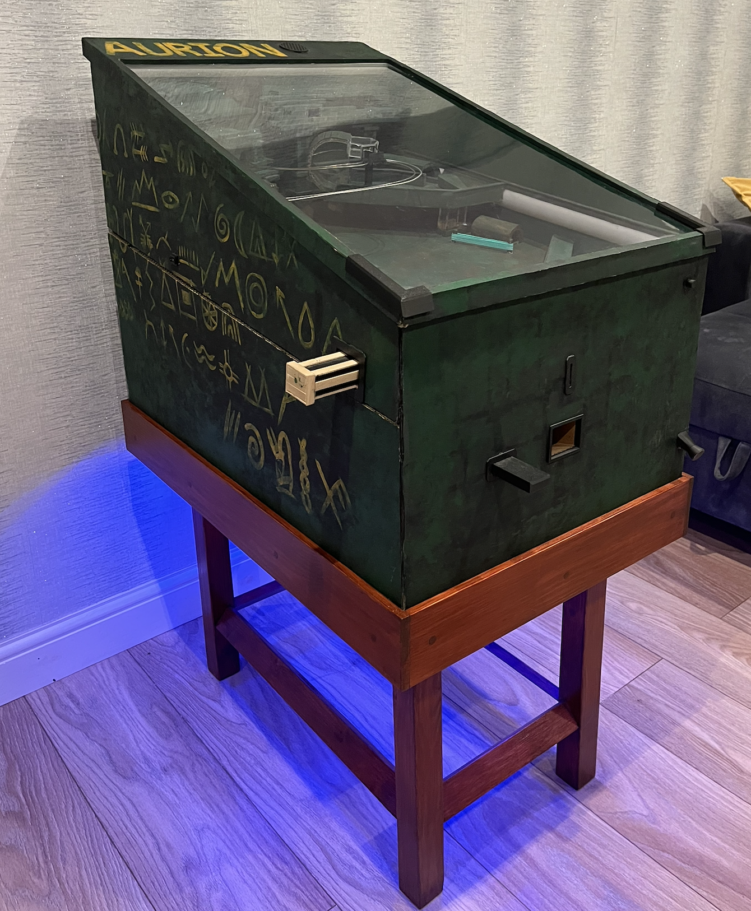
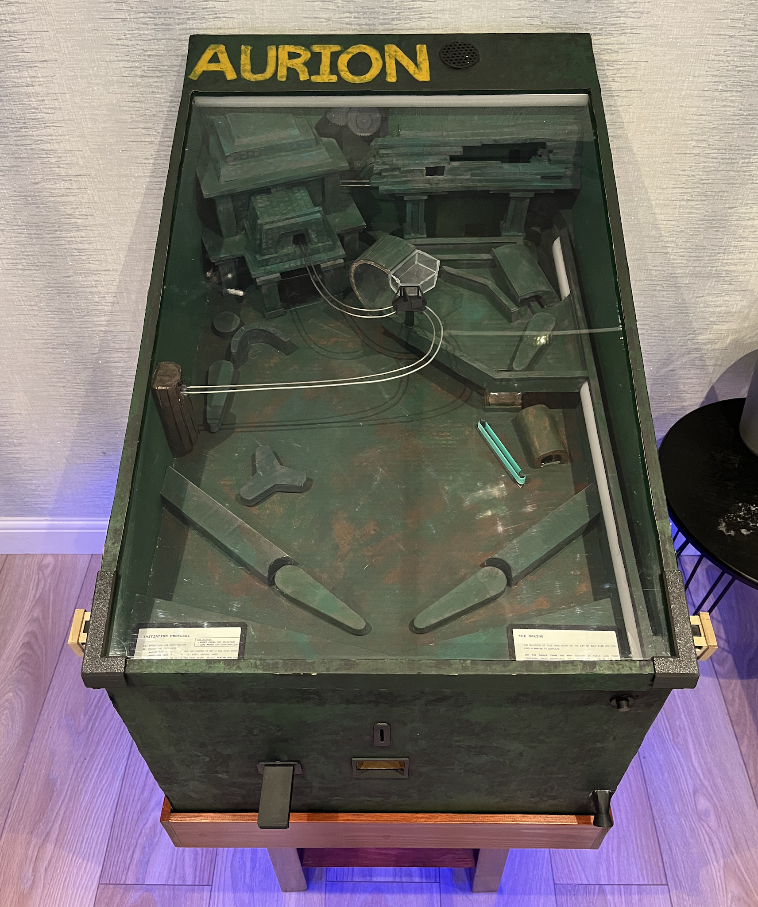
Chapter 1: The Idea
Why I Chose To Build a Pinball Machine
I always liked making things when I was younger and seeing how a combination of materials and parts, passive in of themselves, would combine to make something functional. So I chose an artifact as I wanted to go back to that nostalgic childhood feeling, but specifically a pinball machine as I was intrigued whether the same level of system complexity could be achieved using salvaged parts and recycled materials.
I was also interested in learning and combining several disciplines into a single coherent functional system and arcade machines were the ideal blend of mechanical systems, electronics, aesthetic design and game psychology, with the added benefit of the end product being an enjoyable machine that can be played.
Furthermore due to the interactive and playable nature of the machine it will provide an ideal opportunity for objective results using user engagement metrics and comparisons to real world data.
Chapter 2: The Plan
A pinball machine is a game where a ball is propelled using player-controlled flippers into a table where it bounces of various obstacles, scoring points in specific locations usually when coming to rest in hollows.1
The pinball, arguable the most iconic arcade-style game of all time,2 originated from Bagatelle, an 18th century French parlor table game3 where it had undergone numerous evolvements over the next two century's. This included the early coin operated machines, the introduction of player-controlled flippers, followed by the electromechanical era, adding lights, sound, and more complex playfields. Then came the digital era where microprocessors were added, and now to the modern era that includes licensed themes, advanced physics and software driven rules.1
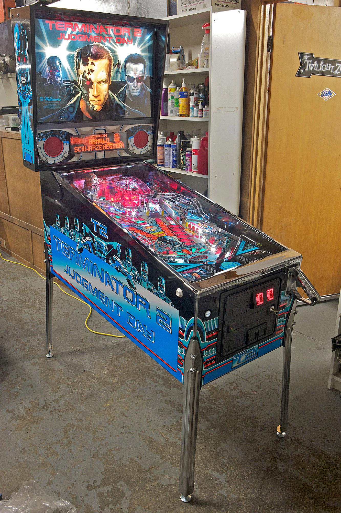
Terminator 2: Judgment Day pinball machine (1991), designed by Steve Ritchie
Building a game that matches that of a full modern pinball machine would be unrealistic, so instead I aim to take the games main idea and features (coin activated ball-release mechanism, motorised elements, lighting, the spring plunger, point scoring, and a strategically designed playfield) and build a machine resembling the functioning of the earlier versions.
So the two main objectives for this project are:
To construct a functional, engaging and visually appealing pinball-style game.
Built from recycled and salvaged materials whilst maintaining functionality, structural rigidity and long term durability.
The plan for this project consisted of first researching existing designs of both commercial and bespoke pinball style games, and using them as inspiration, listing ideas for specific features I wanted to implement along with ideas for the playfield and machine housing design. Then, consolidating the features I wanted implemented, I identified how I plan to acquire the necessary materials and parts, and determined the high-level order of constructions based on the ways in which features and structures will depend on one another.
Inspiration
I began by searching on the internet for images of commercial pinball machines and accumulating them into a mood board as shown in Figure 2.1, along with any examples of custom built designs I managed to find.
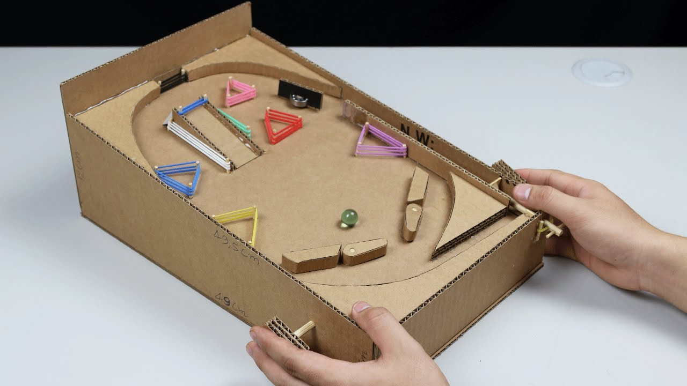
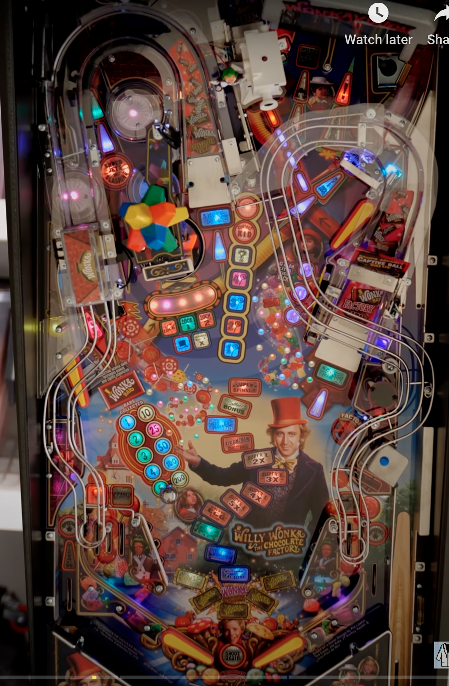
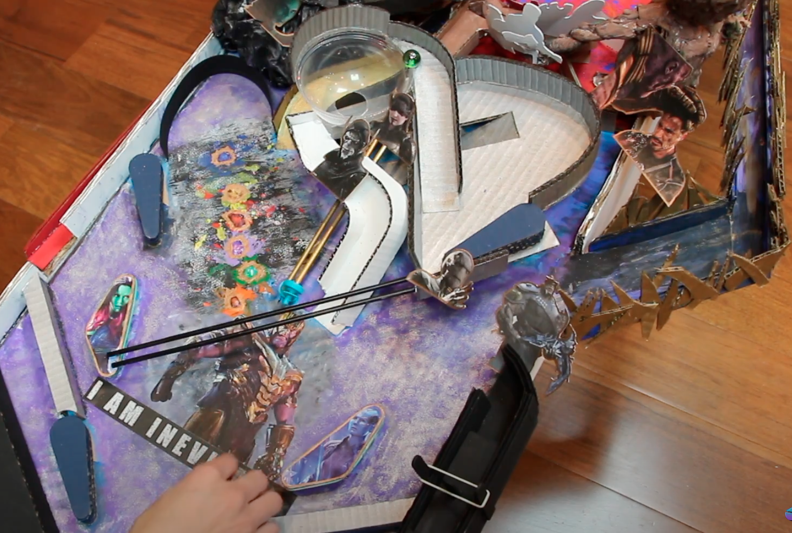
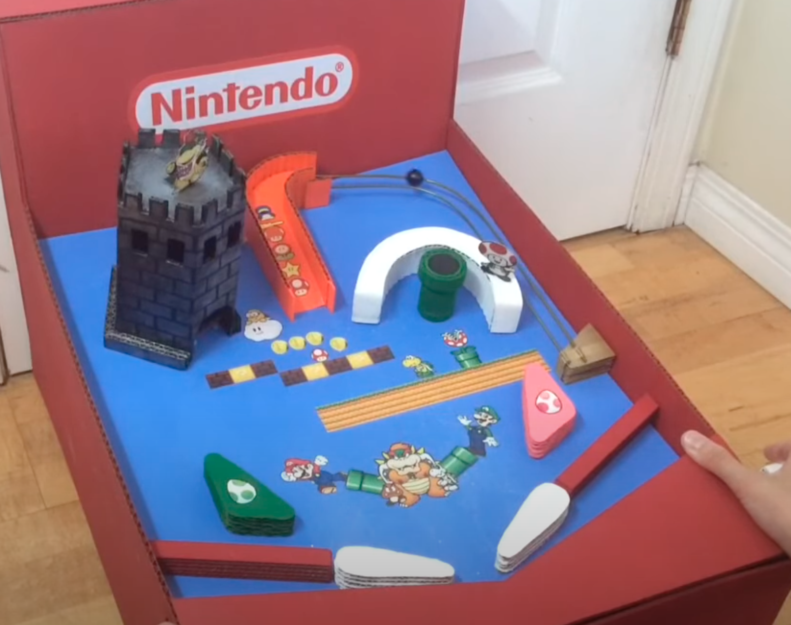
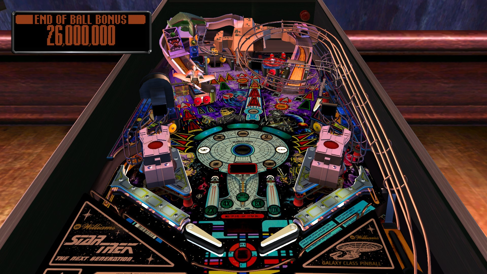
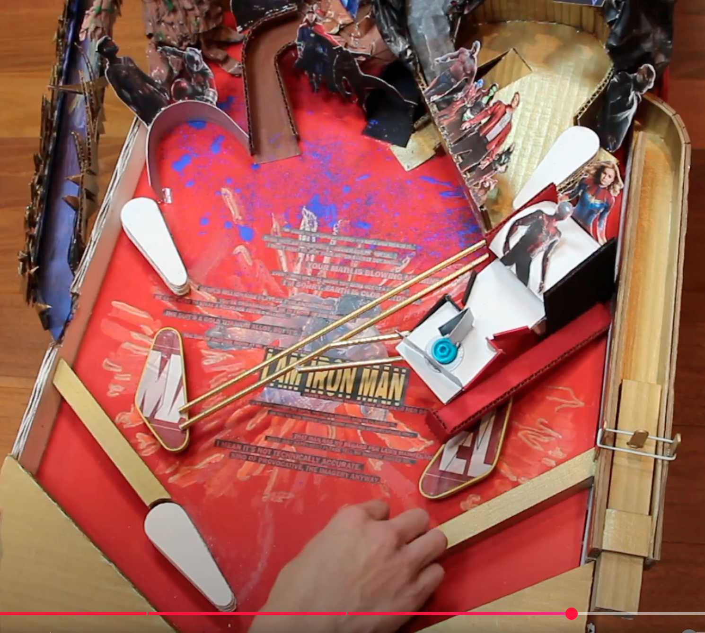
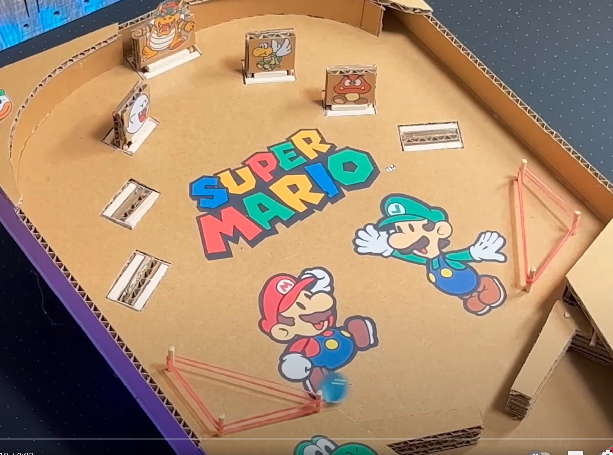
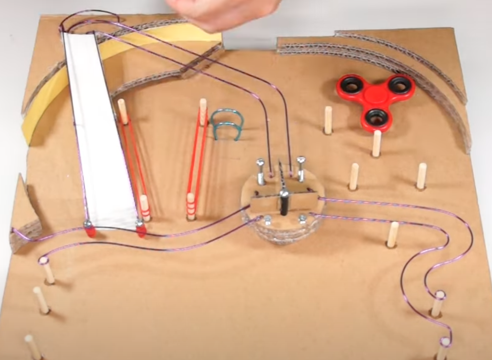
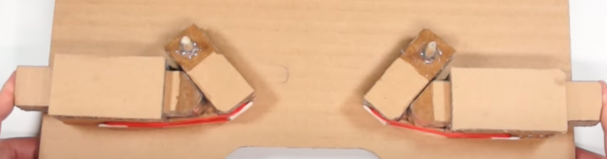
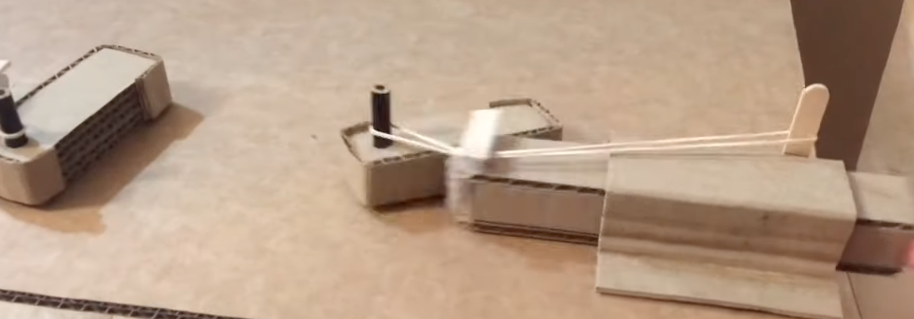
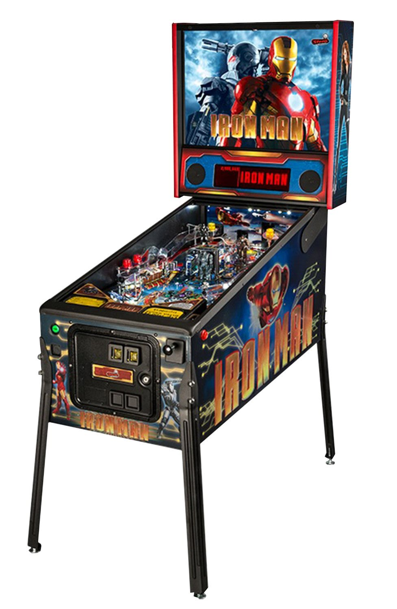
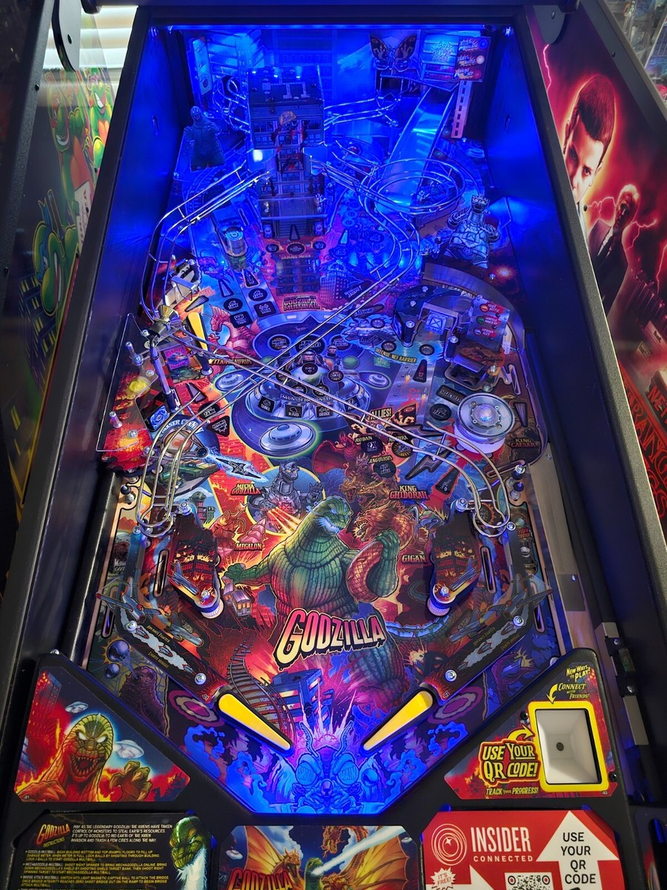
Figure 2.1: Pinball inspiration board (sources: various online images and YouTube videos)
Researching Game Engagement Theory
To understand how I can achieve the objective of making the game engaging and immersive, I began researching and compiling a list of the principles of game design and engagement theory4 along with ideas for how I can implement them in the context of this project:
Having an optimal balance between challenge and skill (flow state) - players are most engaged when a game is neither too easy (leading to boredom) nor to difficult (leading to frustration).5
All playfield locations that yield points made difficult enough to make them challenging.
Optimal balance between places to gain points and places to lose points.
Ability to set a 'difficulty level' through varying the amount of points assigned to specific holes.
Clear goals and feedback - players need to be clear on what they are trying to achieve and their progress in achieving it.6
Core goal will be to maximise the players score in a given amount of balls.
Locations and holes that gain or lose points made clear with markings and corresponding LED lighting.
Keeping track of score made effortless by using easy to count increments.
Autonomy, competence, and relatedness (self-determination theory) - games need to satisfy three psychological needs: player choice and control, feelings of mastery and improvement, connection to others.7
The player will have full control over ball manipulation using the flippers (autonomy).
Designing the playfield in such a way to incorporate strategy (competence).
Having a highscore visually displayed along with the corresponding players name to create competition and connection between players (relatedness).
Immersion and fantasy - the ability for players to have a sense of being 'inside' the game.4
Structures, design, and lighting that matches the games theme.
Formulating a fictional storyline for the playfield design.
Reward systems - rewards such as intrinsic satisfaction, points and achievements trigger motivation loops and encourages continued play. 8
Point scoring system where specific locations and holes can increase or decrease the players score.
Having a select few location that are significantly more challenging to intrinsically motivate players.
Incorporating a level of randomness and unpredictability into the game through toggle gates and lane dividers.
The Theme
To guide design decisions I decided on an 'ancient jungle' theme, as I believe its sense of mystery and adventure would be unique and suitable for a pinball machine whilst also being achievable to replicate in the user experience with color, texture and playfield structures.
I compiled another mood board to help me in forming and visualising design ideas as shown in Figure 2.2.
Figure 2.2: Jungle theme inspiration board (sources: various online image and AI-generated images (using Adobe Firefly))
Designing The Playfield
I started by listing any ideas I had. To help organise them I broke them down into 3 distinct types:
Static elements (stationary structures)
Inlane bumpers
Temple structure
Ruins
Circular bumpers resembling large 'rocks'
Ramps
Scoring holes
Metal elevated rims
Curved guides at the corners
Various hidden ball tunnels
Passive elements (have the ability to move)
The flippers
Spinning bumper
Trap doors in the floor
Mechanical lever for activation of an active element
Hanging gate
Toggle switch gate
Active elements (electrically powered)
Vertically sliding temple door
Rotating door
LED strip lights in the walls, floor, tunnels, and temple
White LED strip floodlight to illuminate the arena
Sensor that opens a door or turns on lights
Then I began visually brainstorming on a whiteboard how they can be approximately positioned to form a strategic playfield as shown in Figure 2.3. However, designing all playfield details in advance would be unrealistic as many elements will require experimental validation to prove adequate functioning such as trapdoors, motorised elements and the optimal positioning of structures relative to the launching directions of the flippers.
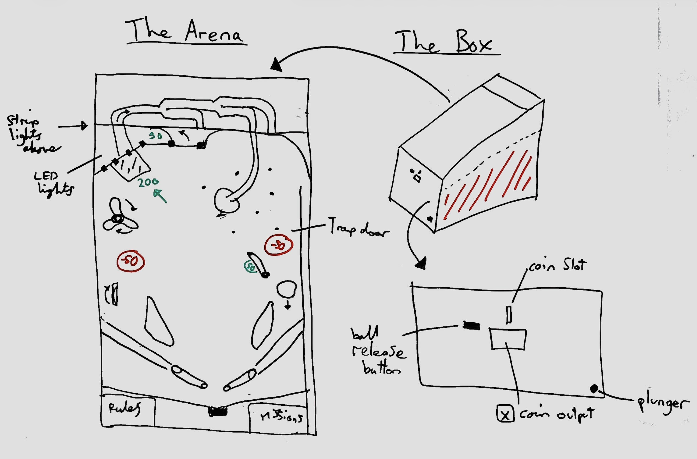
Figure 2.3: Whiteboard sketch idea of playfield design and machine housing
Designing The Machine
Similar to how I approached designing the playfield, I started forming a list of machine features I wanted to implement:
A rectangular prism with a sloped top face to form the basic geometric structure and shape (see Figure 2.3)
A space behind the playfield to allow for hidden ball guides
Spring powered plunger to launch balls
Clear acrylic top
Magnetically removable side panel to provide access to interior
Coin operated ball-release mechanism
Ability to set two physical modes:
Paid - where a coin is required to initiate the game
Free - the balls are always loaded in the plunger
Sourcing Parts and Materials
To determine what materials and parts will be required, I made a table of likely materials I will need for the project, how I plan to get them and the purpose they will serve.
Table 1.1: Material sourcing and purpose
Materials
Purpose
Source
Cardboard
Primary building material: machine housing, and playfield structures
Salvaged from packaging
Wooden craft sticks
Aesthetic detailing, ensuring durability in critical regions (frequent ball impact locations) and mechanical parts requiring rigidity
Existing stock
PLA filament
3D printing for mechanical parts
Existing stock
Acrylic sheet
Machine top and playfield structures
Salvaged from an unused picture frame
5V-12V DC motors
Powering electromechanical mechanisms
Salvaged from an old printer and some existing stock
PWM controllers
Adjusting motor speed
Existing stock
DC-DC buck converter
Step down voltage for 5V components
Car USB charger
Wires
Connecting electronics
Salvaged from damaged decorative lighting
Elastic bands
Mechanising flippers and other mechanical parts
Existing stock
LED strip lights
Playfield lighting
Existing stock (offcuts)
Steel ball bearings
Pinballs
Unused marble set
MDF board
Hard material for areas requiring rigidity
Salvaged from packaging
Wooden sticks
Flipper axis rotation and mechanical parts
Plant stakes and skewers
Springs
Plunger and mechanical parts
Salvaged from old printer
Steel wire
Playfield ball guide rails
Steel coat hangers
Chapter 3: Preparing The Workshop (shed)
Before starting construction on the project, I need a suitable workstation, so I spent a few days organising the shed and transforming it into this projects 'making studio'.
In doing so, I also made a work bench from scrap wood to form the main working surface which can be seen in Figure 3.3.
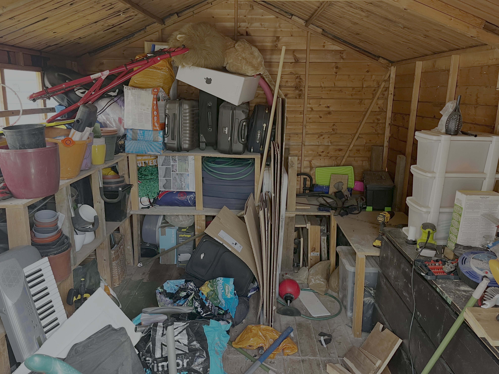
Figure 3.1: Initial state of the shed
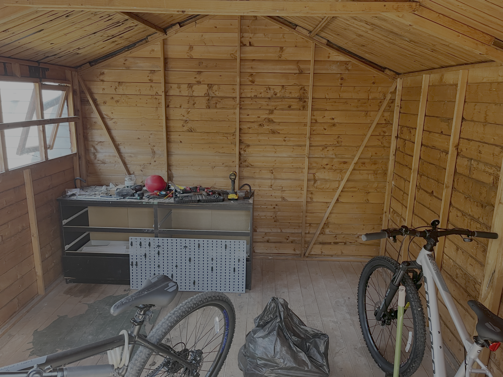
Figure 3.2: Emptied shed
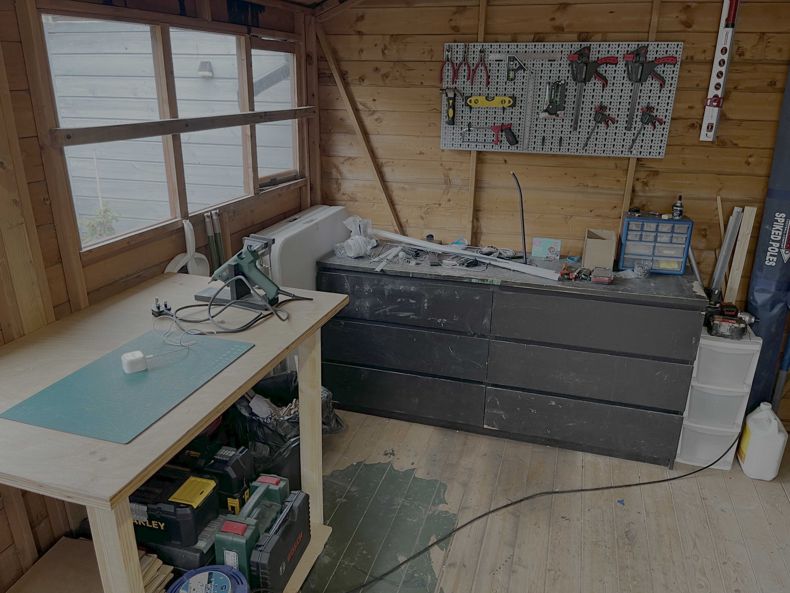
Figure 3.3: Complete shed transformation and work station
Chapter 4: It Started Simple
The first step was to cut out the side walls and floor pieces along with constructing the top frame that will hold the acrylic sheet, as shown Figure 4.1. To ensure right angle corners and straight edges, a set square was used along with a 50cm steel ruler.
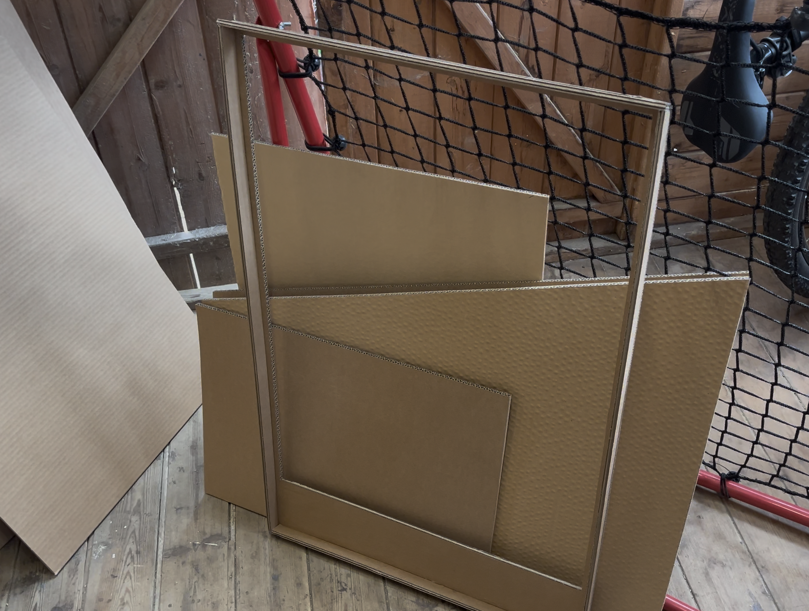
Figure 4.1: Machine box enclosure panels
After that was complete, I began work on the playfield.
Starting with the flippers, to design their shape I used a compass to sketch two circles (one being half the diameter of the other) and connecting them together. Then I used the first cardboard cut out as a stencil to accurately and consistently repeat the design. Finally I attached two pieces together to form a single flipper using hot glue as shown in Figure 4.2.
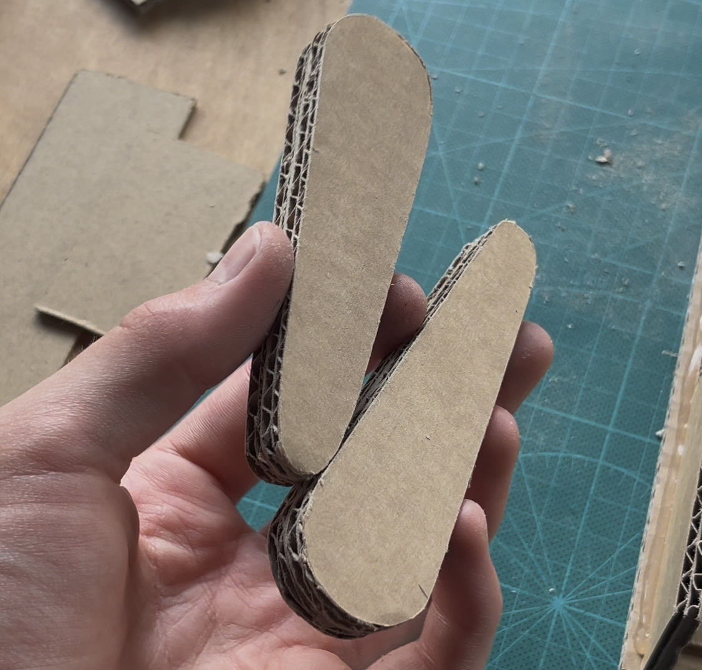
Figure 4.2: Cardboard flippers
With that complete I had to decide the precise flipper location on the playfield as this will influence difficulty and ball launch direction. This included both:
The angle of the flippers, and
The distance between them
I was unable to find any sources on the internet for flipper orientation so instead I analysed the flipper positioning and angle from several images using digital protractor and ruler tools. I determined that the most common flipper angle was 30°-35° to the horizontal, moving through an arc of approximately 50°, and there spacing is usually just greater than the playing ball diameter when the flippers are closest together. So using a pencil I marked out the flipper locations on the playfield along with roughly sketching the positions of potential structures. Then I moved onto the flipper mechanism.
Taking inspiration from the cardboard flipper mechanisms shown previously in Figure 2.1, I made the actuation buttons by glueing four cardboard rectangles, attached a wooden pin to each flipper for the axis of rotation along with a rectangular piece of cardboard on the underside to transfer the rotating motion. Then I made the button housing on the underside of the playfield, and after a few iterations of elastic band placement, I found the best approach to be individually returning the flipper and button using separate elastic bands. The final design can be seen demonstrated in Figure 4.3.
The flippers simply work by the sliding actuator buttons rotating the rectangular piece attached to each flipper rod which transfers the motion to the flippers.
A crucial factor I had to consider when making the mechanism was the point of contact between the buttons and the rotating pieces:
Too far down the rectangular piece, and there will be too little rotation and therefore not enough force to redirect balls
Too high up, and there will be too much rotation and the flippers would get stuck
So it took several iterations of the button housing placement to get the optimal rotation amount.
Finally, I glued the machine enclosure panels together as shown in Figure 4.5, leaving one side unattached as I plan to make the machine in two separate parts (the playfield, and machine enclosure) for ease of construction and at the end when the final design is complete, permanently attach the two together.
Figure 4.5: Partial machine enclosure assembly
Chapter 5: An Engineering Challenge
Then came the design of the ball release mechanism - arguably the part I was most interested in, but also significantly more complex than I initially anticipated.
I began by clearly defining the objective:
A coin-based mechanism that releases balls into the plunger only when the correct coin (£2) is inserted, while also allowing a 'free mode' in which the system can be set to bypass coin validation.
To achieve coin validation, my idea was to use precisely cut slots (just smaller that the width and diameter of a £2 coin) positioned on a sloped ramp which should only allow the accepted £2 coin to roll past as its the largest, and all others to drop into a rejection box.
The ramps functioning can be seen demonstrated in Figure 5.1. I used digital calipers to measure the widths and diameters of all the coins, then to cut the holes I used the distance up to half the diameter between the second largest coin and the £2 coin (and the same for the width). Due to the micrometer precision that was necessary, I cut the openings from an MDF board which is a much harder material than cardboard, allowing for highly accurate coin slots to be achieved.
Figure 5.2: Initial sketch of the ball release mechanism design
Then I moved onto the mechanism itself. I came up with the idea to release the balls using a rectangular platform containing a hole that can slide beneath a vertical ball magazine. The £2 coin would effectively 'extend' a pushbutton allowing for the platform to be pushed forward, lining up its hole with the ball magazine, and enabling the balls to drop down. The initial sketch of this idea can be seen in Figure 5.2.
To allow the mechanism to be set on the 'free mode' bypassing the need for the coin, I added rotating latches to the sliding platform which enabled it to be held in place in the extended position. However after completing the sliding platform as shown in Figure 5.3, the latches exhibited excessive flex and where therefore unreliable.
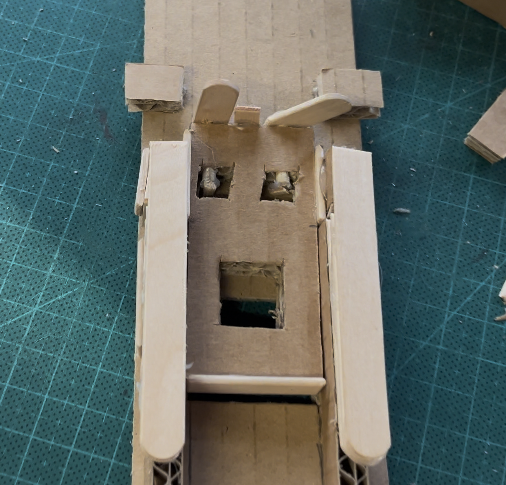
Figure 5.3: Ball release mechanism first design of sliding platform
For the second iteration of the sliding platform I added a lever on the underside that can be latched into a recess, holding the platform in place. This can be seen in the completed design in Figure 5.5.
After approximately three hours, I had completed the initial prototype of the ball release mechanism as shown in Figure 5.4 and Figure 5.5 where:
A pushbutton when pressed moves freely into a coin space and returns passively using an elastic band
When a coin is present in the coin space and the pushbutton is pressed, it causes the sliding platform to also be pushed
The platforms hole vertically lines up with the ball magazine and the balls drop down
When the pushbutton is released, the coin drops into a collection box and the platform returns to its resting position using elastic bands
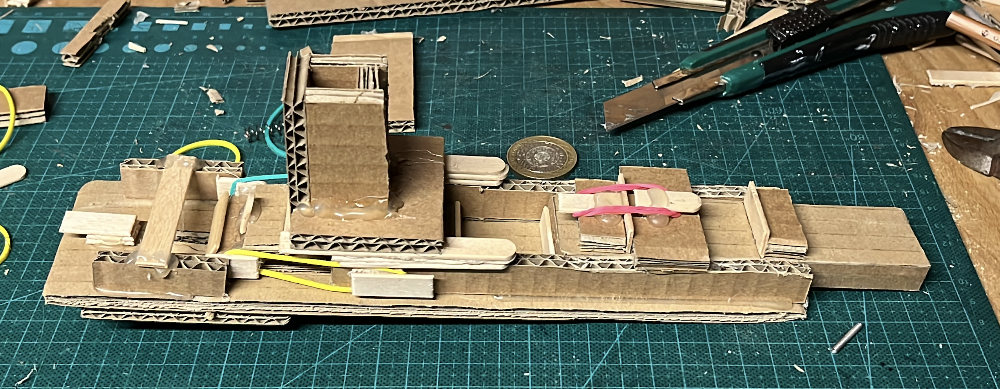
Figure 5.4: Top view of ball release mechanism
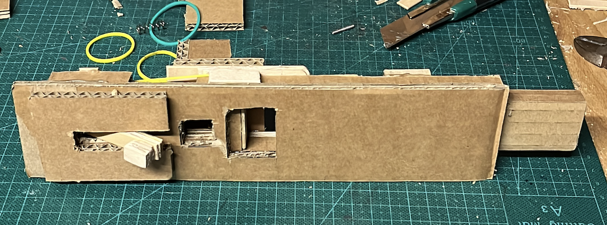
Figure 5.5: Underside view of ball release mechanism
However after testing the mechanism, several issues have surfaced so I began the iterative process of solving each sequentially.
The hole in the platform was slightly misaligned causing the balls to drop without the coin also dropping
To solve this I remade the ramp ensuring the hole was precisely positioned so that the moment the coin dropped the balls would also drop
Due to there being a constant force also acting on the coin from the sliding platform, the coin would frequently not drop down due to being pushed back
I came up with the idea to adjust the angle of the wooden craft stick secured to the sliding platforms point of contact with the coin, so that instead of the force acting horizontally, it acted at an angle, pushing the coin downward and into the collection box
If the user performed a quick press on the pushbutton only a fraction of the balls would drop down due to the sliding platform returning instantly
My initial plan was to add two guides beside the platform to create just enough friction to slow down the return. Although it worked, this solution resulted in inconsistent returns and was unreliable as the amount of friction would fluctuate over time.
Then once I had installed the mechanism I replaced the friction design with a latching tab (made from a wire) and grove which can be seen in Figure 5.6. The platform slider would snap into the latching tab and return after a suitable delay. This method proved to much more reliable and consistent.
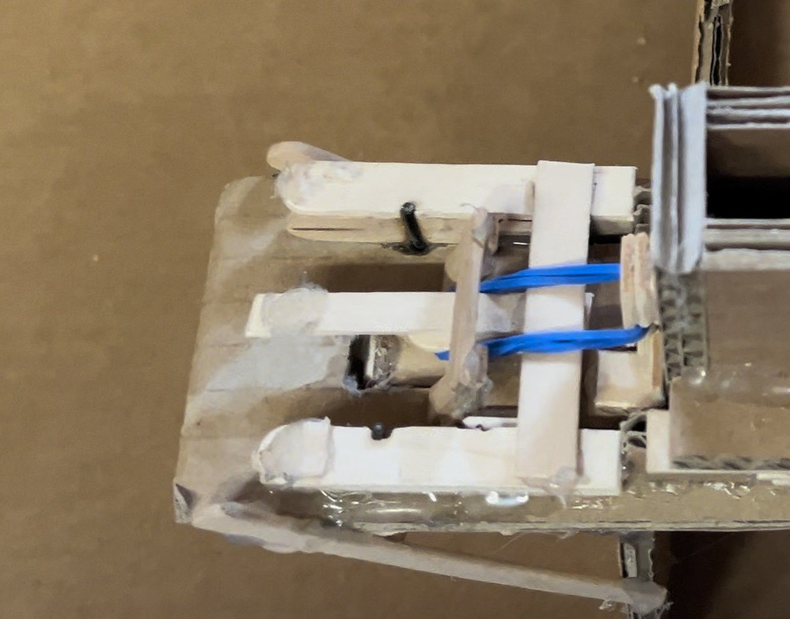
Figure 5.6: Latching tab and groove of the ball release platform
Now with the working mechanism complete I began installing it into the machine enclosure along with the coin collection box, coin validation ramp and coin rejection compartment which can be seen in Figures 5.7 and 5.8.
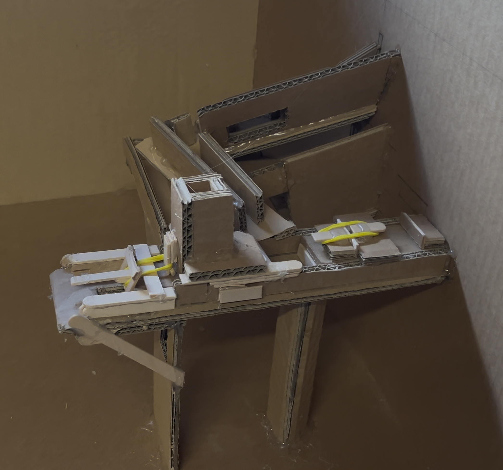
Figure 5.7: The installed ball-release mechanism and coin validation
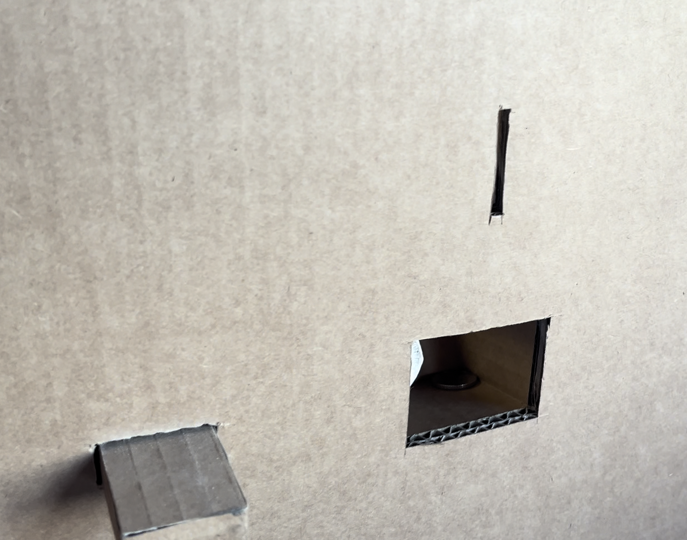
Figure 5.8: Front view of machine enclosure showing the coin slot, rejection compartment and pushbutton
Finally to complete the system, I built the plunger and the launch ramp as shown in Figure 5.9, and the whole working system demonstration can be seen in Figure 5.10.
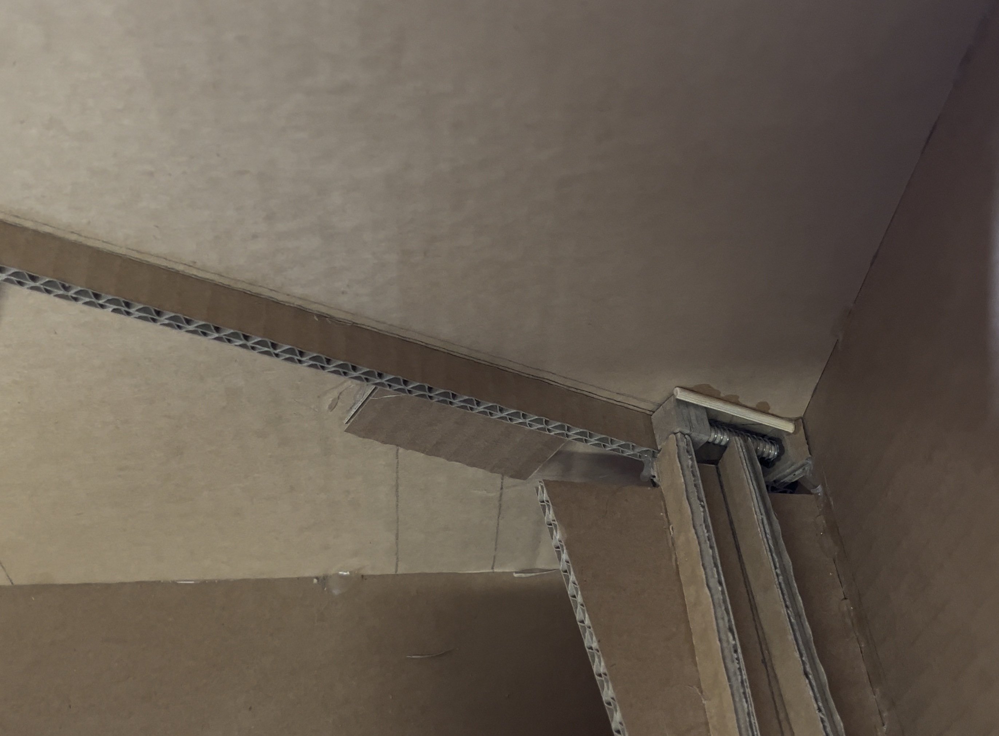
Figure 5.9: The launch ramp and plungerFigure 5.10: Ball-release system demonstration (video link: https://youtu.be/FvdhHAMP2-o )
Chapter 6: Doubling The Flippers
Whilst I was thinking about where other structures and features would be positioned on the playfield, I had the idea to potentially add a further two flippers to the game, this would not only make it more strategic by adding a further element the player could manipulate but it would also allow the ball to be propelled from other locations meaning I can make the structures and therefore playfield considerably more complex.
As this would affect how I will proceed with designing the whole game, the time to decide whether I should implement dual flippers was now. After a few minutes of contemplation I decided the benefits outweighed the risks (mainly being the additional complexity risking the mechanisms smoothness of use).
I started by making an additional two flippers with the same method as before and then began adapting the current mechanism to enable the motion from the first flipper to transfer its rotation to the second as shown in Figure 6.1.
The change in the functioning of the actuator button from connecting the second flipper turned out to be negligible. As I plan for the other additional flipper to be located on the second level I will complete the right flipper mechanism once the upper level is installed and the flippers position is clear.
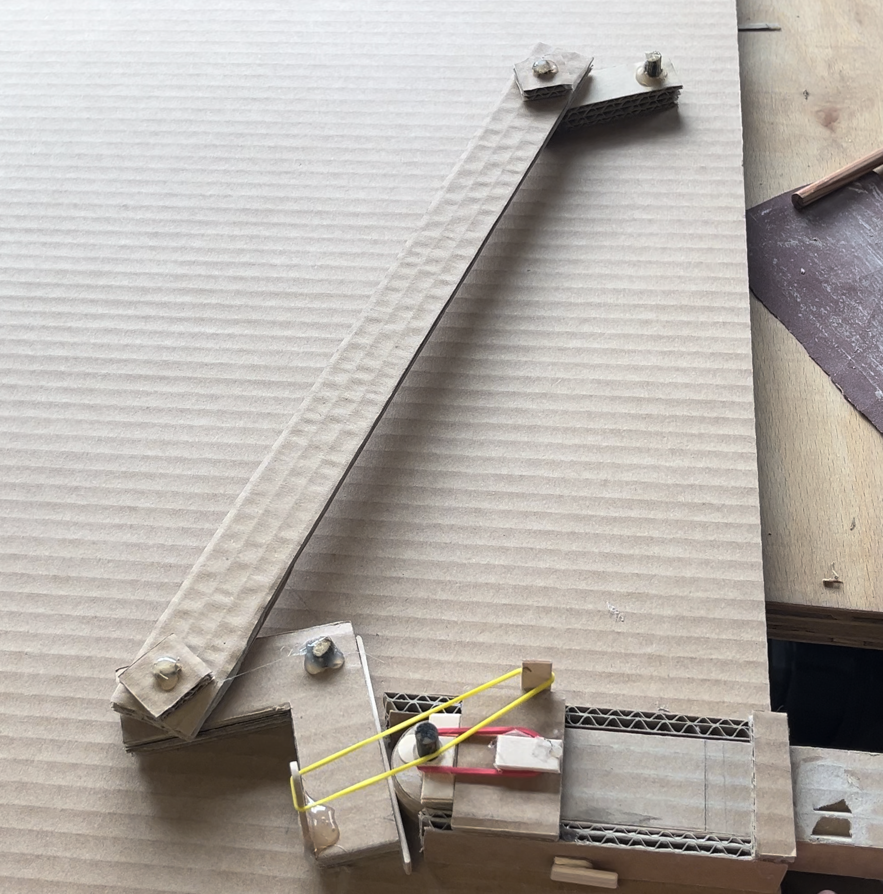
Figure 6.1: Dual flipper mechanism for the left flipper
Chapter 7: The Birth of The Circuit
Next I moved onto the electrical circuit and the first step was to identify how the machine will be powered. The main considerations in making this decision will be:
Current: the rated current of the power supply must be above the total maximum consumption of the lights and motors9, and
Voltage: the voltage supplied needs to match what is required by the components9
The few potential sources I had access to included: AA batteries, 18V drill battery, 12V drill battery and a 7.4V 18650 Li-ion battery from an electric water gun.
As the highest voltage that would be needed is 12V (for the LED strip lights) it would be ideal to have a 12V power source, and for all the other components using 5V, a DC-DC buck converter can be used to step down the voltage which I can salvage from inside a USB car charger (an example can be seen in Figure 7.1) which conveniently will convert 12V to 5V.
Therefore I decided the 12V drill battery (2A), shown in Figure 7.2, would be most suitable for the machine as not only does it provides the ideal voltage for the DC-DC buck converter but connecting it into the circuit should be relatively straight forward due to the metal contacts.
Figure 7.1: USB car plug (source: Screwfix, Ring RMS23 2 Outlet Type A USB In-car Charger)
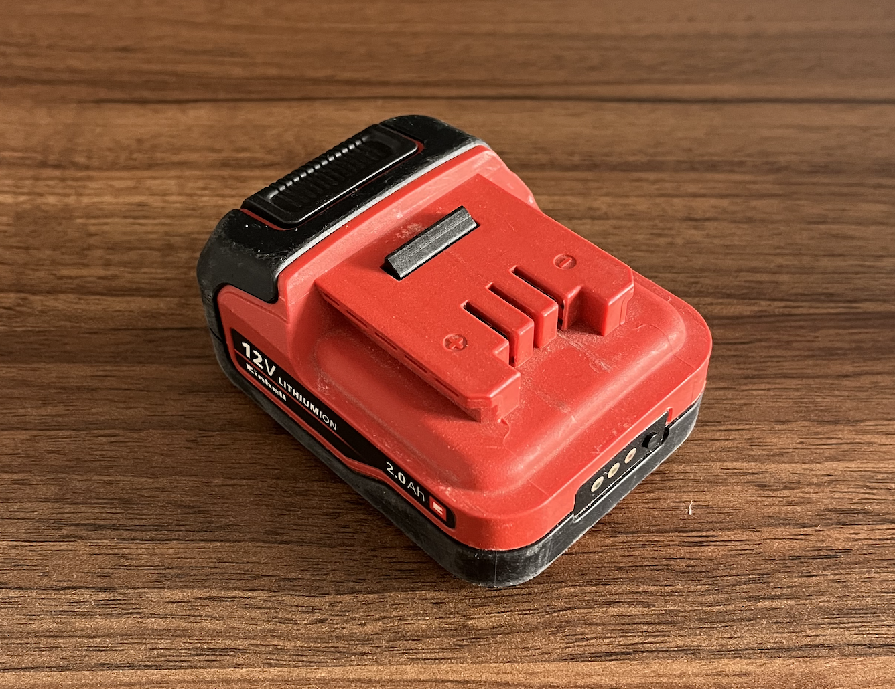
Figure 7.2: 12V drill battery
Now with the power source selected, I began working on how to connect the battery to the circuit. My plan was to replicate something similar to how the battery snaps into its drill compartment which can be seen in Figure 7.3.
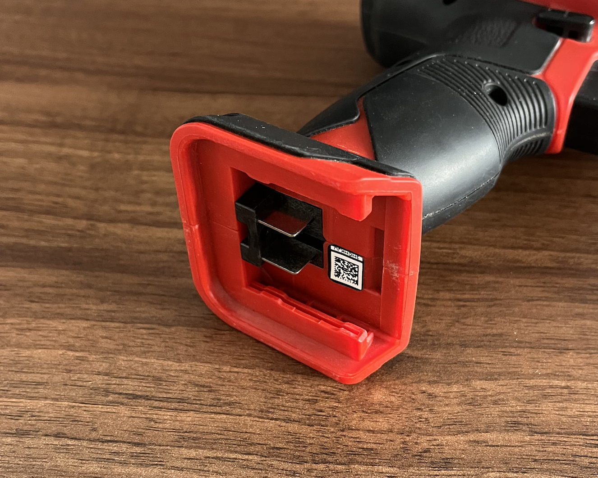
Figure 7.3: Drill battery compartment
After approximately two hours and a few iterations, I managed to build the battery compartment as shown in Figure 7.4 out of some cardboard, wooden craft sticks and nickle plated steel contacts I salvaged from an old battery pack, soldered to some wries. On the first iteration I had used 1.5mm aluminum plates I salvaged from an angle bracket and although it worked, after some research I had found aluminum would oxidize too easily10 and this would not be a long term solution, so instead I replaced them with the much more reliable nickle plated steel contacts.
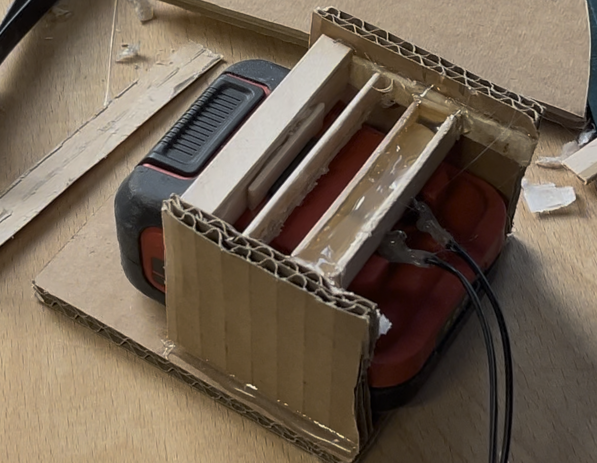
Figure 7.4: Battery compartment with attached wires
To test the connections and circuit I soldered the wires to the buck converter and plugged in a USB color changing LED strip I salvaged from an old frame display, this can be seen in Figure 7.5.
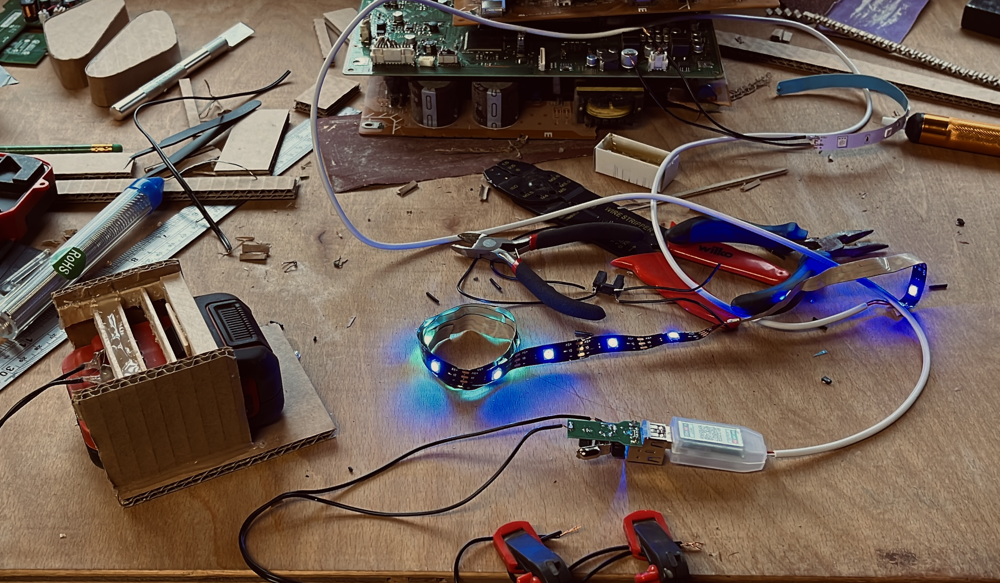
Figure 7.5: Successful test of the battery, buck converter and LED strip light circuit
Now with a functional circuit to supply power I began working on the vertically sliding door that will eventually be installed at the entrance of the temple structure.
My plan was to use a small geared DC motor I had available to transfer its rotating motion into a linear oscillating movement. By implementing a crank and slider linkage mechanism11 into a cardboard housing I build for the sliding door as shown in Figure 7.6, I was able to achieve the desired reciprocating motions as demonstrated in Figure 7.7.
I started by making the outlane guides beneath the flippers as shown in Figure 8.1, in which I embedded acrylic sheet panels with the idea that later I can illuminate informational cards containing rules and instructions using white LED strip lights from underneath.
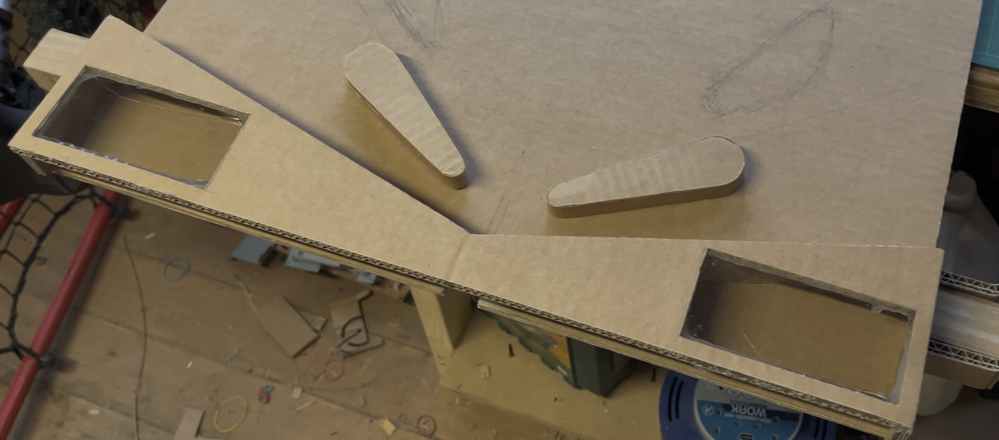
Figure 8.1: Outlane guides with embedded acrylic sheets
I then began externally making most of the playfield elements I was planning to implement which can be seen in Figures 8.2 and 8.3, this included bumpers, a spinner, temple pillars, and ramps.
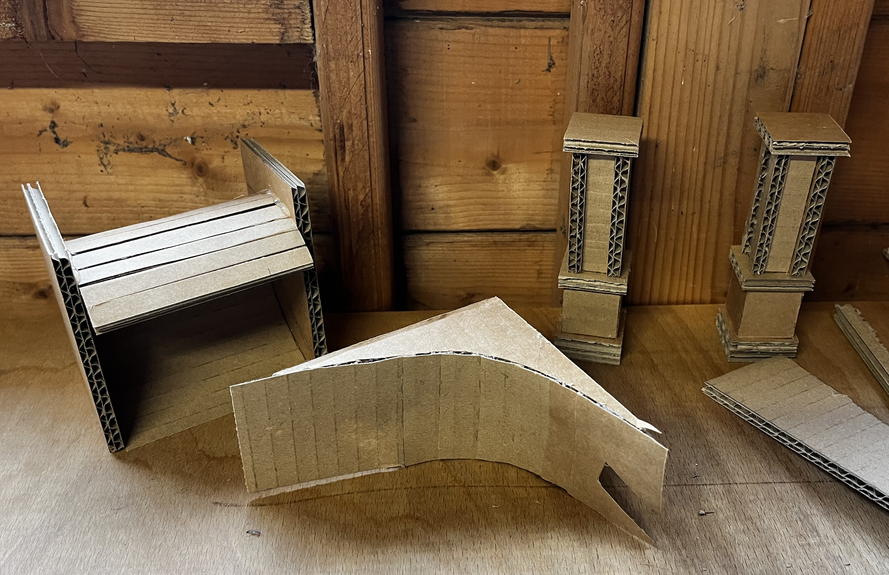
Figure 8.2: Playfield elements
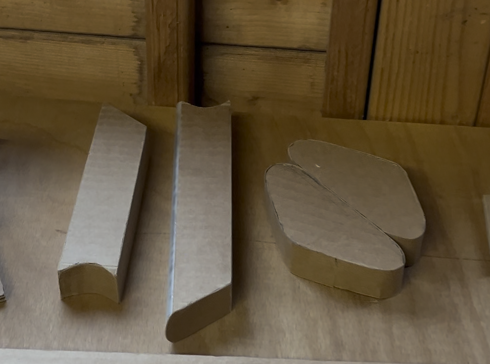
Figure 8.3: Playfield bumpers
Initially the inlane bumpers that guided balls into the flippers were made entirely out of cardboard, but later I had the idea to replace the bumper side with offcuts I had kept from an LED light diffuser channel. This would not only provide the balls with the classic elastic deflection but it would allow me to insert LED strip lights inside the bumpers to illuminate the diffusers which should considerable increase the aesthetics of the game. I then proceeded to mount the bumpers along with their LED strip beside each flipper as shown in Figure 8.4. To hold the playfield in the machine housing I added tabs on each wall on which the playfield can be placed.
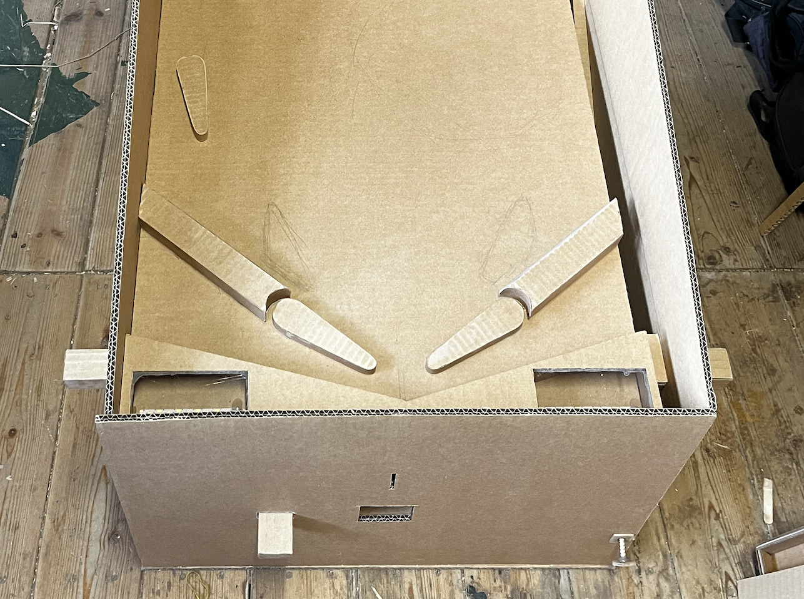
Figure 8.4: Installed flipper bumpers
Next I moved onto constructing the temple structure. I roughly sketched out the temple location and after verifying a ball could be launched inside, I installed the vertically sliding door and glued on the pillars as shown in Figure 8.5. I also had the idea to replace the floor covering the door mechanism with a flush layer of acrylic sheet allowing visibility of the arguably elegant mechanism which I later also plan to illuminate with LED lights.
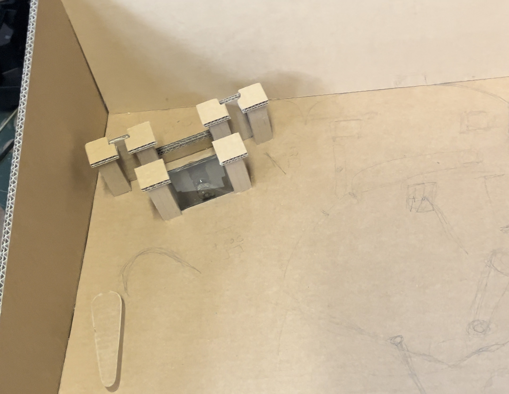
Figure 8.5: Temple pillars and door installment
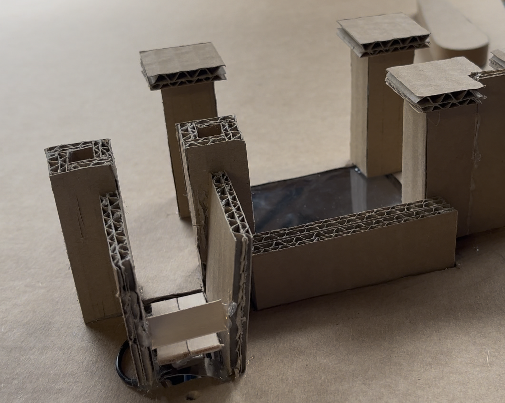
Figure 8.6: Contact plate ramp door activation design
I thought a 'hidden' opening between two pillars would make an ideal location to have an activating mechanism for another door I planned to incorporate on the back panel. My initial plan was to have the ball roll onto a ramp (as shown in Figure 8.6) which, due to its weight, would push down on two metal contacts, briefly allowing current to flow and spinning the doors motor. However after testing, it quickly came apparent that the weight of a moving ball was insufficient to cause the metal contacts to touch. I tried to resolve this by adding an angled craft stick end piece hoping it would push the ball down into the ramp but that did not work either. As this was tested in a place that would be hidden away regardless (intentionally), I removed the ramp and moved on to the next task.
To add an element of randomness to the game, a ball that has successfully entered the temple structure will exit from one of three location:
the ball is lost and makes its way back to the ball-release mechanism.
comes out the left side of the temple.
comes out near the flippers out the playfield.
To achieve this I installed a ramp with openings (for outcome 1) as shown in Figure 8.7, leading to the opening behind the back panel where two sloped ramps will begin as shown in Figure 8.8, one leading to outcome 2, and the other to outcome 3.
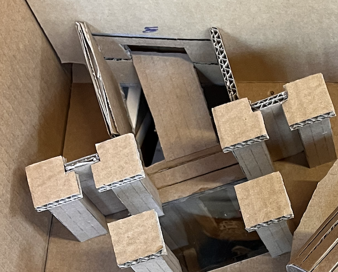
Figure 8.7: Temple ramp
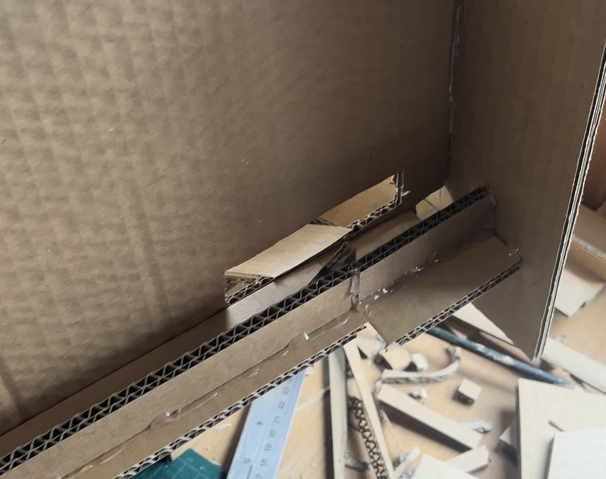
Figure 8.8: Concealed temple ball pathways
I had the idea to locate the other door on the back playfield panel that leads the ball under the playfield and back out from an opening as that will allow me to also connect the left ramp in Figure 8.8 (outcome 3) to the door tunnel. I first installed the entry ramp, then proceeded to cut out the opening for the door as shown in Figure 8.9.
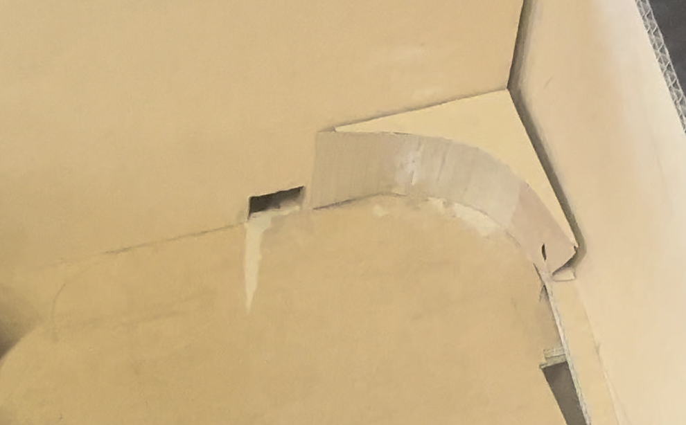
Figure 8.9: Opening cutout and entry ramp instalment
For the door I used a semicircle cardboard cutout attached to a DC motor, blocking the opening as shown in Figure 8.10.
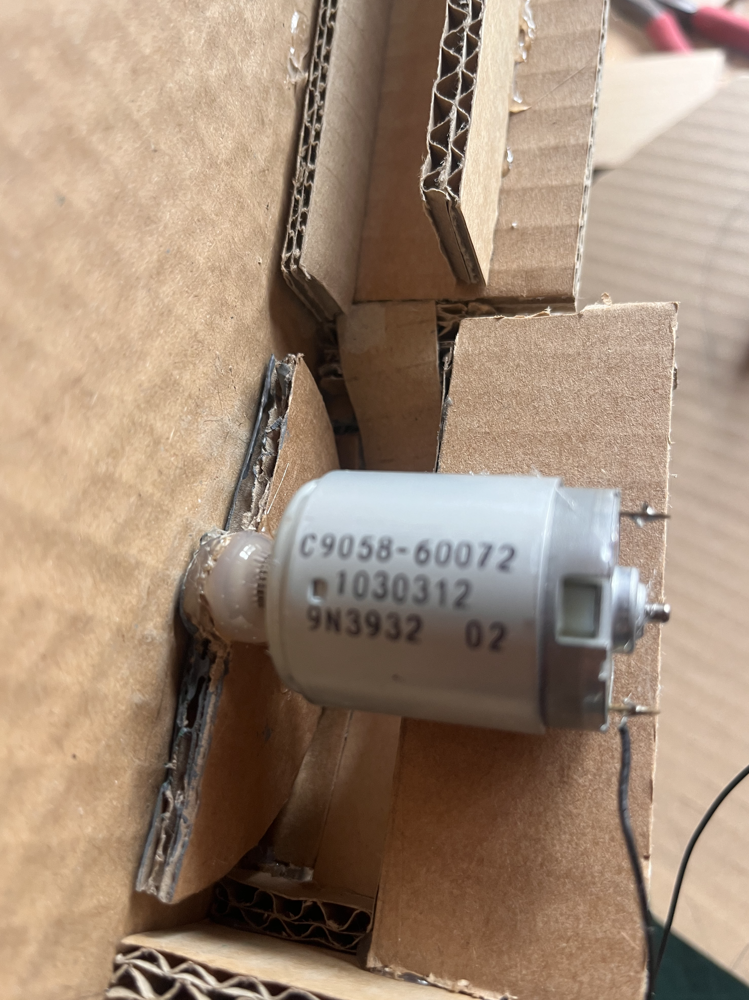
Figure 8.10: Rotating door design
Chapter 9: The Idea That Changes Everything
A speaker that I found from an old computer gave me the idea to integrate background music into the machine and enhance the user experience. After doing some research on the internet of how this would be achieved, I found a DFPlayer module was required which is a small MP3 circuit board that sends audio to the speaker from a connected SDcard.12
However in doing this research I had the idea to potentially take this a step further and fully integrate electronics into the game (such as sensor based scoring, a fully interactive OLED user interface, and real-time audio feedback). Although this would increase the projects complexity I believe it would substantially improve the gameplay experience by incorporating immersive audio and an automated scoring system and therefore ensure the objective of building an engaging game is met. So I began researching the electrical components that will be required. Unfortunately this would mean the project would not completely meet the objective of being built entirely from recycled materials but I concluded the magnitude of improvement that a few bought components would make to the machine was justified.
For the ball-detection scoring system, an active infrared obstacle sensor proved to be the superior choice for this application due to its compact size, high precision and fast detection speed.13 For the display I selected the SSD1306 OLED module because of its high contrast which should accurately match the games aesthetics.14 And lastly I went with an Arduino Uno for the microcontroller15 which is arguably the best for simple input-output implementations.16 I managed to find all the necessary components on Aliexpress along with the DFPlayer and placed an order giving so far the projects cost to a total of approximately 9£.
However, I want to still minimise any additional expenditure in order to see how much of the machine can be made using reclaimed materials, so I will still be salvaging any electrical parts required such as resistors, transistors and capacitors from the motherboards of an old TV and Computer.
Chapter 10: Layering Up
To maximise the playfield area and add aesthetic depth to the game, I plan for there to be a further two levels the ball can go. The second level will be located roughly on the upper right-hand side of the playfield as this will allow the upper left flipper to propel a ball up a ramp to the second level on which the upper-right flipper will be located allowing the player to further manipulate the ball to either the third level or several other places. After some brainstorming and sketching, I had a design in mind so I began externally constructing the structure in order to make sure the design was functional before attaching permanently into place.
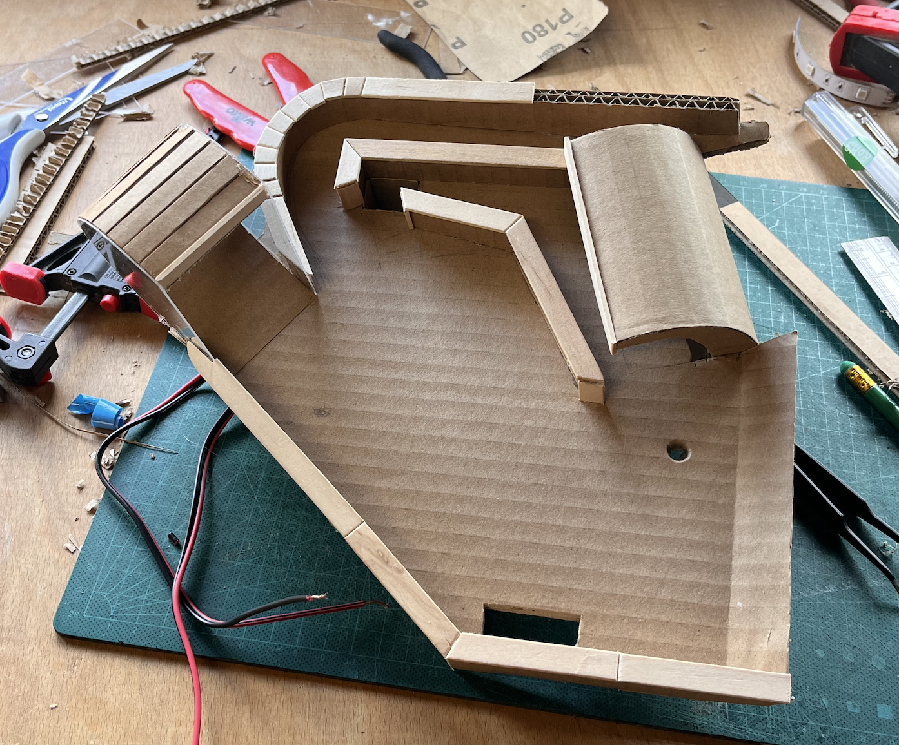
Figure 10.1: Second level structure
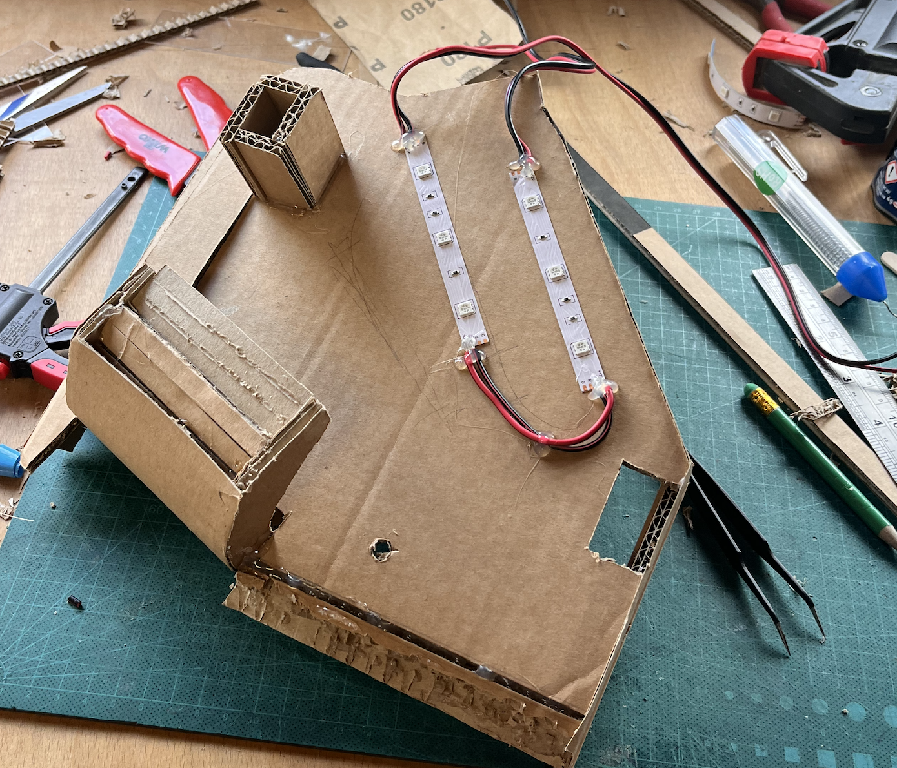
Figure 10.2: Underside view of second level structure
As shown in Figure 10.1 and Figure 10.2, the structure contains two scoring holes a ball can drop into, the ramp to the third level and, now with the ability to use IR sensors, I have added a back lane where the ball can roll down and activate a sensor, opening the rotating door that was installed earlier.
I then started working on the third level which will be made entirely out of an acrylic sheet (allowing for clear visibility of the level bellow) and I plan for it to lead into a toggle gate randomiser that guides the balls into one of two rails. One leading into the second layer of the temple and up a ball elevator. A few iterations later and the third level was complete which can be seen in Figure 10.3. Once the sensor is installed and working, I can glue the structure permanently into position.
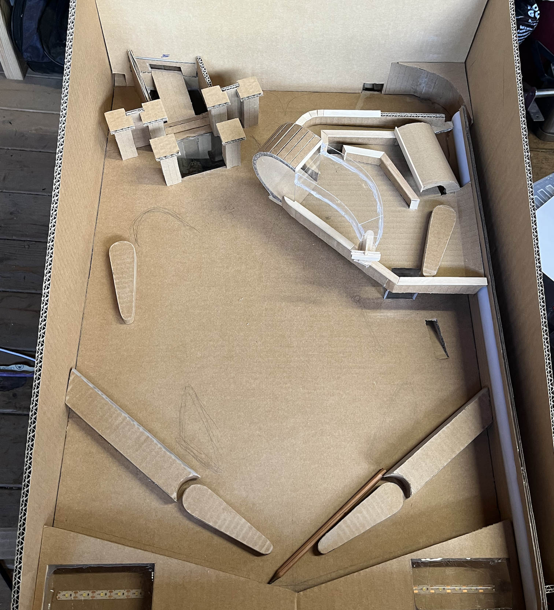
Figure 10.3: Second and third level structure dry fit
I have also installed the USB LED strip to both sides of the ball launch side panel. The installment process of the lighting on the plunger side can be seen in Figure 10.4.
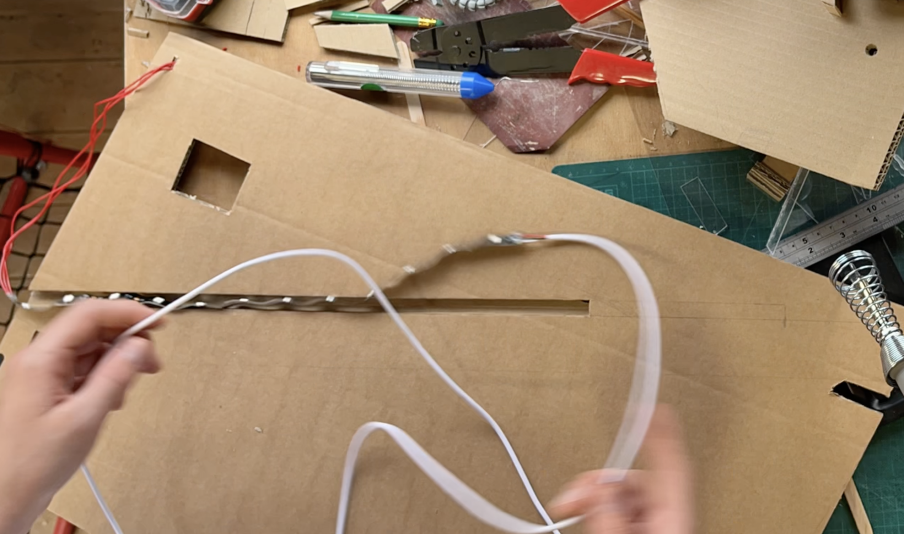
Figure 10.4: Instalment of LED lights on ball launch side panel
Chapter 11: Arrival Of The Electronics
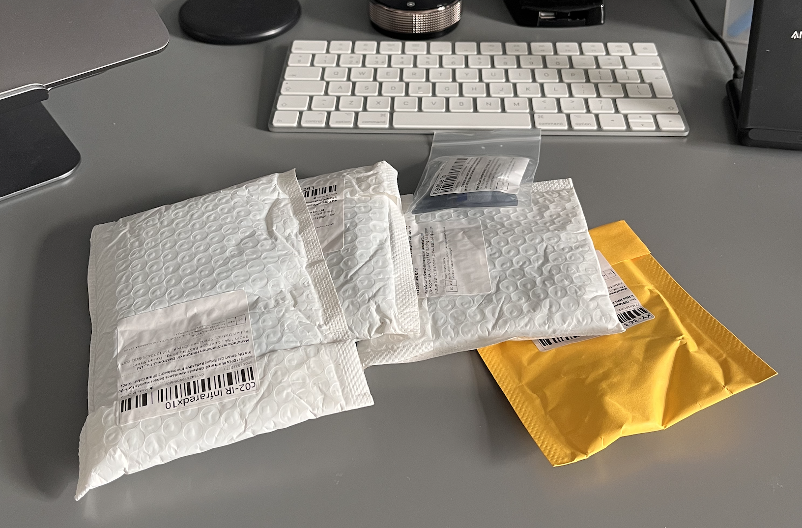
Figure 11.1: Unopened packages of electronics order
Now that the electronics have arrived I will focus on wiring and testing each electrical system (audio, OLED display, IR sensors, the transistor activated door, and button input) before making any further advances with the machine.
Before starting on the electronics, I read chapters 1-3 of a recommend book called Practical Electronics17 to get a foundational understanding of the fundamental electronic concepts such as series and parallel, voltage, current, and ohms law.
I also watched several YouTube video to understand how to use the Arduino Uno microcontroller.18
Starting with the speaker (see Figure 11.2) my initial plan was to expose the 3 wires inside an audio AUX cable and solder them to the DFPlayer as shown in Figure 11.3 and then plug the cable into the speaker. However after several hours of trial and error the most I could get were popping sounds.
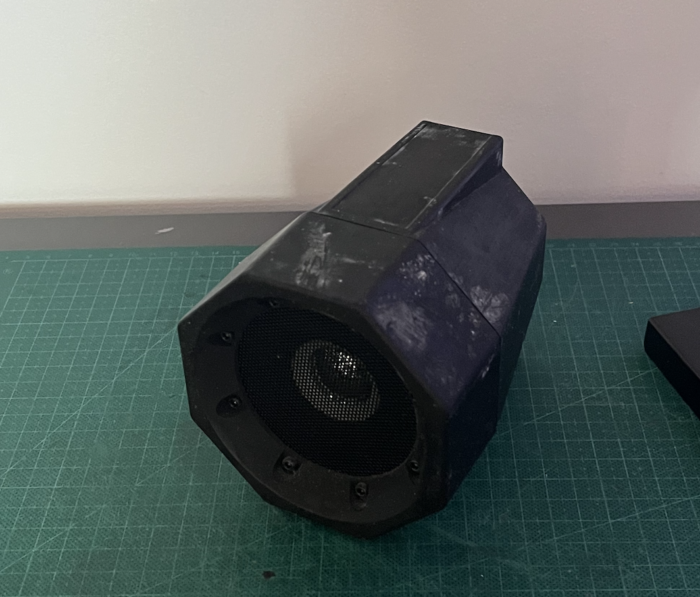
Figure 11.2: Salvaged speakerFigure 11.3: AUX cable wires soldered to DFPlayer
As there could have been numerous sources of error (wiring, insufficient power, hardware, a faulty speaker, etc) I decided to attempt the more common method of connecting the DFPlayer to a small 3w speaker19 which I managed to salvage from an unused electronic book toy as seen in Figure 11.4 (along with a small N20 DC motor which may potentially be of use later on).
Figure 11.4: Electronic book containing a speaker and small motor
After soldering the speaker to the DFPlayer as shown in Figure 11.5, I managed to successfully get the audio playing as demonstrated in Figure 11.6.
Displaying graphics on the OLED module as shown in Figure 11.7 was relatively straight forward. I connected the 4 pins to the Arduino board drawing on a highly informative article20 which not only mapped the connections clearly but also outlined how to use the Adafruit_GFX21 and Adafruit_SSD130622 library which is pre-written code for the arduino program that handles how to send graphics to the display.
Figure 11.7: Working OLED display module
Then came the lengthiest and most painstaking iteration phase: the sensors.
The plan was to position the sensors in such a way where they would detect a ball rolling inside a cardboard guide. However the challenge in this was that due to the curvature of the steel balls and that IR sensors work by detecting reflected waves, the rolling balls have to be precisely positioned on each pass to successfully reflect the waves into the receiver of the sensor.
First I began by ensuring the sensors where able to detect close objects by powering the module and using the potentiometer (which can be seen in Figure 11.8) to adjust its sensitivity. Then came a whole day of trying various sensor positioning and orientation on the ball channel. Overall the main iterations included overhead, side-mounted, eye level and finally the design that showed consistent readings was mounting the sensor underneath a layer of plexiglass as shown in Figure 11.9.
Figure 11.8: IR sensorFigure 11.9: Successful design of sensor ball detection
Another system that took considerable trial and error was the transistor-motor circuit. After trying various different salvaged transistors, I managed to successfully control the motor using digital signals from the Arduino as demonstrated in Figure 11.10. I also added a diode in parallel with the motor to protect sensitive components23 as it will be powered using the 5V power rails.
Lastly to receive user input I salvaged a push button from an old monitor button circuit board which can be seen in Figure 11.11, soldered two wires to the terminals as shown in Figure 11.12, and after a brief test I had a working method of user input. However the button alone is quite inconvenient to press so I later plan to design and 3d print a button cover to make it more user friendly.
Figure 11.11: Monitor Button circuit boardFigure 11.12: User input button
Now that all the individual circuits have been successfully built, I can move onto the second major engineering challenge of this project.
Chapter 12: The Ball Elevator
Before identifying and building a mechanism to electromechanical raise a ball, I needed to first attached the additional levels to the playfield and complete the temple structure.
So after integrating a sensor with the second level as shown in Figure 12.1 and confirming consistent detection, I permanently glued the structure into place as demonstrated in Figure 12.2 and attached this levels flipper.
I then began finishing the main temple structure using the reference images from Figure 2.2 for guidance on the design. The temples second level and roof will be made separate and detachable (using magnets) in order to provide easy access for maintenance and sensor sensitivity adjustment. The development of the temple structure and design can be seen in Figures 12.3, 12.4 and 12.5.
Figure 12.3: Designing second level of templeFigure 12.4: Designing the temple roof Figure 12.5: Partially finished temple structure
Now having a reference for where the ball will roll too from the rails I can begin constructing the ball elevator which will raise a ball high enough for it to roll onto ruins located above the back playfield door opening. The iterative process of achieving a functional mechanism spanned over 4 days and has been summarized bellow:
My first idea was to use a conveyer belt (which I made using hot glue) with paddles. However this design had several major flaws. The main being that the stress on the motor from the belt tension, caused a considerably high rotational resistance which burned the motor almost immediately.
Figure 12.6: First ball elevator iteration
In the second iteration I replaced the motor drum with one I 3D printed and connected it to gears to reduce the tension on the motor. However due to the 1:1 ratio of the gears the belt rotated unreasonably fast.
Figure 12.7: Second ball elevator iteration
I replaced the gears with a 2:1 gear ratio and decided to add the drive drum at the top to increase efficiency. But after testing, the movement turned out to still be too fast, even with PWM speed adjustment.
Figure 12.8: Third ball elevator iteration
The replacement of the 2:1 gear ratio with a 14:1 reduced the speed considerably resulting in a belt movement that was able to latch onto a ball successfully. However as the gears where directly attached to the back wall panel, it acted as an amplifier, creating a loud rattling sound that would interfere with the speaker audio.
Figure 12.9: Fourth ball elevator iteration
In the final design I had attached the gears to the opposite side as shown in Figure 12.10, added felt pads to further reduce noise by removing gear rubbing, and replaced the excessive 12V motor with a smaller 5V motor as shown in Figure 12.12, all this and the combination of using a paper belt instead, resulted in smooth, consistent belt movement and a considerable reduction in gear noise.
Furthermore, the gears being on the panel facing wall provided an ideal opportunity to add another acrylic sheet window (shown in Figure 12.11) to show the meshing gears along with the rising of a ball. A demonstration of the working mechanism will be shown in the following chapter.
Figure 12.10: Gears for final ball elevator designFigure 12.11: Acrylic widen for final ball elevator designFigure 12.12: Final design dry fit
Now with an indication of the exact raised hight of the balls, I started constructing the ruins. I began by cutting various lengths and sizes of cardboard and layering them incrementally into a tunnel shape to resemble an ancient beam structure whilst keeping an opening for visibility as shown in Figure 11.13.
Initially, I thought the OLED would be best located centered on the back playfield panel but I had the idea to embed the OLED display in the ruins as shown in Figure 11.13 which I felt was more suitable. The ruins were also made as a separate structure for ease of painting and external testing which can be seen in Figure 11.14 before permanently mounting into place.
With that complete I needed to change the initial design of the sensor activated door (see Figure 11.15) as due to the direct connection of the motor to the rotating plate, the door spins too fast, impacting both the 'ancient secret door' opening feel and precise timings required for accurate opening and closing.
Figure 11.15: Initial design of rotating door
The solution I came up with was to use that small motor I salvaged from the book toy in combination with a reduction gear train that I designed and 3D printed. The CAD model can bee seen in Figure 11.16 and its functioning in Figure 11.17.
Figure 11.16: CAD model of gear speed reduction for rotation doorFigure 11.17: Rotating door final design demonstration (video link: https://youtu.be/vHvgbIoh1Cc)
Chapter 13: Painting
Originally I had planned to make the whole machine in two separate pieces for ease of building then at the end glue the two permanently together. However I realised I could instead have the two parts lock into one another using hooks as shown in Figure 13.1.
This not only matched the rigidity as if it were attached permanently (which was the main concern) but it would allow for easy access to all parts of the machine for maintenance and future improvements.
Figure 13.1: Machine enclosure hooks
Then came painting. After some analysis of the theme board I decided on three base colors: stone grey for structures, brown for the playfield, and a lush jungle green for the walls. Then I would scatter various shades of 'overgrown' greens to resemble plants, grass, moss and vines.
I started by painting all the structures with their base grey color as shown in Figure 13.2, followed by the playingfield as shown in Figure 13.3
In doing so I realised the current flipper design was unreliable due to excessive friction in the actuation button and between the flippers, playfield and rotating actuation piece, which caused the flippers to become jammed and difficult to actuate.
The solution I came up with was to use 3D printed spacers on each contact point as shown in Figure 13.4 to elevate the cardboard surfaces slightly as shown in Figure 13.5 to remove all paper-to-paper friction.
Figure 13.4: Plastic spacers attached to flippers and playfieldFigure 13.5: Elevated flippers due to the spacers
For the actuator buttons that also had disproportionate friction, I attached wooden craft sticks to all sides along with the button housing as shown in Figures 13.6 and 13.7, to instead have wood surface contact which would actually reduce friction overtime due to the surfaces becoming smoother, reducing surface roughness and therefore friction.24
Figure 13.6: Attaching craft sticks to flipper buttonsFigure 13.7: Attached craft sticks to button and its housing
Another element that required improvement was the curved ramp used to guide balls into the playfield from the plunger as seen in Figure 13.8. Because the entry ramp had been attached to the playfield, after being seating into the machine housing the transition into the ramp was not seamless which caused irregular ball entry and in some cases blocked the ball from entering entirely.
My initial plan was to have magnets on both surfaces to force them flush, however after testing, the magnetic force from fridge magnetics was insufficient.
Figure 13.8: Initial playfield guide ramp design
Finally I decided on the slightly tedious but more robust solution to replace the entire ramp with a new design that is instead attached to the machine enclosure wall. The comparison of the two ramp designs can be seen in Figure 13.9 and a demonstration of the plunger can be seen in Figure 13.10.
Figure 13.11: Ball guides installed underneath the playfield
Before finishing painting the interior, I built and installed all the ball guides as shown in Figure 13.11 along with the six acrylic sheet mounted sensors in their respective positions, all converging to a single shoot that will lead into the ball-release mechanism.
Figure 13.12: Completed interior paintingFigure 13.13: USB LEDs turned on
Chapter 14: The Control Box
Figure 14.1: Whiteboard sketch of control box idea
Rather than disorganised wiring, I had the idea to have a control box as shown in Figure 14.1 that would be the central point for all wiring and house the:
Arduino Uno
PWM potentiometers for controlling motor speeds and floodlight intensity
the DC-DC buck converter USB port that will connect to the USB lights and the 5V line
the battery holder
So I constructed the box and attached the battery holder and USB port. However as I am making the box and playfield separate in the final design, the two pieces need to disconnect completely, and as the control box will be connected by wiring to the playfield I cannot permanently attach it to the machine enclosure without sacrificing detachability. So my plan was to secure the control box using hooks. The first iteration can be seen in the Figure 14.2 and the second in Figure 14.3.
Figure 14.2: First iteration of control box hooksFigure 14.3: Second iteration of control box hooks
However after testing two different attachment designs, both were unreliable due to excessive flexing when inserting the battery.
Upon further thought I realised that instead of detaching the whole control box, all that was required was to disconnect the wiring, so after some research, I determined:
RCY connectors (see Figure 14.4) were most suitable for the LED strip lights and motor power lines as they are easy to disconnect and support up to 3A of current25, and
For the logic lines, RE connectors were optimal as they directly connect to the Arduino Uno and the configuration of adjacent pins could be modified easily25
So with this I purchased the necessary connectors from Aliexpress.
Figure 14.4: RCY connections that were bought from Aliexpress
Then I proceeded with permanently attaching all playfield LED strip lights and connecting them in series. I achieved each RGB color by connecting one wire to the positive copper pad and the other to one of the three ground copper pads (R-red, G-green, B-blue) as shown in Figure 14.5.
Figure 14.5: Wires soldered to the LED strip light to create green
Then came testing. I began with the main loads which included the LED lights and motors as shown in Figure 14.6 and demonstrated in Figure 14.7.
Figure 14.6: Testing the series LED light stripFigure 14.7: Testing all motors in parallel (video link: https://youtu.be/hcVID8mjap0)
Figure 14.8: Speaker and ruins attached to the playfield
With the main loads tested and functioning, I proceeded to mount the structures permanently in place (which included the ruins, sensor-activated door and ball elevator) and the speaker along with the DFPlayer as shown in Figure 14.8.
Before testing all the digital electronics I needed to mount the spinner in place.
As shown in Figure 14.9, in the first iteration my idea was to use a 3D printed gear reduction box powered by a 5V motor to reduce the rotation speed. Although it was functional, similar to the early ball-elevator design, the playfield acted as an amplifier which resulted in a considerably noisy sound.
So I replaced the initial design with a direct connection from a 12V motor to the spinner using a 3D printed D bore pin that the D-shaft pin of the spinner can slide into from above. This managed to eliminate almost all noise and using the PWM controllers I was still able to reduce the speed of the spinner to an ideal RPM.
Figure 14.9: Initial design of motor gear box for spinner
I then tested the ball elevator again, along with the temple door and spinner, which can be seen in Figure 14.10.
Finally, I could begin connecting all electronics to the microcontroller and power supply and begin testing them under actual operating conditions. This setup can be seen in Figure 14.11.
Figure 14.11: Connected electronics to microcontroller and laptop for testing
I started by testing each electrical system individually which included audio, each sensor, the display, and the transistor activated door. Bellow I've added a few example of the code I written to perform each test and the corresponding test demonstrations.
After I validated all the electrical systems in isolation I began incrementally combining them into a single program file to test joint functioning, however I encountered a problem which I explain in Figure 14.18 at the time I solved it.
The reason I added the capacitor initially was to stabilise the supply and prevent voltage dips caused by sudden current changes in the system.26
However researching in hindsight, the reason why the capacitor caused the flickering had to do with the fact that on power up the capacitor draws a large inrush current which causes the 12V rail to briefly dip and due to the DC-DC buck converter requiring a stable voltage, it shuts down (for protection), and when the voltage recovers the converter tries to restart.27 This ON-OFF cycle repeats continuously which appeared as flickering every few seconds.
With all electrical tests now complete, I began painting the exterior. This was achieved by first applying a base coat of grey, followed by darker lines to resemble brick walls, then finally hand rendering ancient symbols using a vibrant gold and adding subtle green accents with emphasis on the corners. The finished painted exterior can be seen in Figure 14.19.
Figure 14.19: Back view of painted machine exterior
Chapter 15: Facing The Coin Mechanism (again)
A significant amount of time has passed since I had installed the ball release mechanism and consequently due to the nature of its design, it had stopped functioning as intended. This was mainly seen with inconsistencies in the return of the ball-release sliding platform due to variations in friction.
After thorough evaluation I had come to the conclusion that the design was fundamentally unreliable due to too many variables being at play (impulse and length of press, delay of slider, tension in the elastic bands - which reduce overtime, friction and precise coin drop timing).
Revaluating the problem from first principles, I identified three usable coin properties: size, mass and metallic composition. Taking a mass-based approach, the idea then to use a lever and fulcrum mechanism quickly came apparent. So I began by removing the existing size-based design (keeping the coin rejection ramp as that proved reliable) and repositioning the ball guides. The transformation process can be seen in Figures 15.1, 15.2, 15.3, and 15.4.
Figure 15.1: Existing ball release mechanism design Figure 15.2: Removal of the existing mechanismFigure 15.3: Adding new and repositioned ball guidesFigure 15.4: Designing the new fulcrum-lever mechanism
The idea was to use the weight of a coin on a paddle to apply a force to a connected lever, rotating it about a fulcrum, lifting a rear gate and releasing the balls. The coin would then slide of the paddle due to its slop, removing the force and the lever would return to its resting position using an elastic thread. In theory.
I began work on the mechanism and conveniently due to its simplicity compared to the previous design, approximately one hour later I had a working coin activated ball-release system as demonstrated in Figure 15.5.
This design performed exceptionally well, with a 100% success rate across over 40 coin trials. I also added a servo motor, which I had on hand from a previous project, to the rear end of the lever, allowing for automated release of the balls if the user selects the free 'adventure mode'. In addition I replaced the cardboard pushbutton with a plastic 3D printed one I designed to reduce the excessive friction which was experience before - this managed to substantially reduce actuation force and significantly improved button responsiveness.
Chapter 16: Programming
Before moving onto programming the final software game architecture, I had to make various minor improvements throughout the machine following issues that had surfaced after testing gameplay functionality:
The biggest one was inconsistencies with sensor ball detection in a number of locations. After examining the cause it became apparent that balls moving over sensors on the acrylic had too much side-to-side movement. Eventually I came up with the idea to have balls roll on rails instead, which I made using skewer sticks as shown in Figure 16.1 and 16.2. This design removed almost all lateral play resulting in consistent and precise positioned passes allowing for successful sensor detection 100% of the time.
Figure 16.1: Rails and sensor from second level dropFigure 16.2: Rails and sensor from the outlane drop
Due to an unintended impact from myself, I damaged the third level as can be seen in Figure 16.3, but fortunately all surrounding structures remained intact. So I removed the existing acrylic level and began making a new one, in doing so I managed to improve the aesthetics by incorporating a more geometric shape. Also I needed to replace the toggle switch gate that was originally made from craft sticks. I figured It would be more reliable to use a 3D printed version so I designed one in CAD as shown in Figure 16.4 and installed the structure in place as shown in Figure 16.5.
Figure 16.3: Damaged third levelFigure 16.4: CAD model of toggle switch gateFigure 16.5: New design of the third level with attached rails
I used a 3D printed bracket I designed to prevent movement of the rails leading into the temple (see Figure 16.5) whilst also allowing for disassembly.
Lastly I found a slight bowing in the top frame so I 3D printed magnetic brackets to hold it down as shown in Figure 16.6.
Figure 16.6: Magnetic brackets to hold the top down
In addition I spent a few days building a wooden support frame stand to hold the machine at the ideal playing hight which can be seen in Figure 16.7.
Figure 16.7: Support frame stand for machine
With that complete and all the hardware now installed and tested it was time to program the full game.
I began by identifying the software features I wanted to implement:
Brief introduction when the game powers on (from OLED display and a 'host' AI voice)
Mode selection: 'adventure' and the 'main mode'
If adventure selected:
Difficulty selection (changing sensor scoring and door opening timings)
Ball amount selection
Game screen showing the players score and balls left
Ability to set the new high score if the main mode was selected
Game over screen showing the final score
Option to select to play again
Knowing the features I wanted to implement, I then developed the software logic flow diagram which can be seen in Figure 16.8.
Figure 16.8: Whiteboard sketch of software logic flow diagram
Using the flow diagram I began programming and implementing each stage sequentially to make debugging significantly easier. Utilising the official language documentation28 when necessary.
Also I found that physically designing the OLED user interface was highly inefficient, as every time I wanted to see how a shape or piece of text looked, I had to wait for the code to compile which could take upwards of 30 seconds. So searching for a solution on the internet, I found an online Arduino simulator website29 that was able to simulate my specific OLED module, push button, and microcontroller. This drastically improved efficiency, taking just a few seconds to see any changes I made on the OLED. Then when I was satisfied with the functioning and display design, I incorporated the logic into the physical Arduino program.
A few days, considerable debugging, and approximately 300 lines of code later, the machine software was complete and functioning.
Chapter 17: The Final Design
To showcase the final design I recorded a video where I demonstrate the main features, the user experience flow, and machine gameplay which can be seen in Figure 17.1.
The final design has successfully met its original aim of being a functional, engaging and visually aesthetic pinball style game. Although not being entirely constructed out of salvaged and recycled materials as originally set out, the final additional expenditure for the project was only ~£10, and with the machine being built primarily from recycled cardboard and salvaged electrical components, the objective of constructing a machine from recycled materials whilst maintaining functionality and durability was mostly met. In some areas, the project has exceeded original expectations. This mainly came with the addition of electronic systems such as integrating sensor based scoring, an OLED display, and audio from a speaker.
Although the original aims have been met, several areas could be improved, the main being the inconvenience of having to replace the elastic bands every 3-5 days, this could potentially be eliminated entirely in the future by using a unique elastic material with a longer lifespan. If the project were repeated I would adopt a stronger emphasis on using 3D printed features in areas such as mechanical elements, actuator buttons, and delicate components to ensure more reliable and durable designs whilst also being more efficient to produce which would considerable save production time.
Numerous iterations were required to successfully achieve functionally in many of the core features including the sensors, ball-release mechanism, and ball elevator. This has not only considerably improved my problem solving ability but I was able to develop many engineering related skills including designing electronic circuits, computer aided design (CAD), programming, soldering, and the basics of constructing mechanical systems.
References
1Wikipedia. (2020). Pinball. [online] Available at: https://en.wikipedia.org/wiki/Pinball.
↩
2The (2020). A complete history of pinball; from the first machine to now! [online] The Games Room Company. Available at: https://www.gamesroomcompany.com/blogs/news/a-complete-history-of-pinball-from-the-first-machine-to-now?utm_source=chatgpt.com.
↩
3The Strong National Museum of Play. (n.d.). Pinball. [online] Available at: https://www.museumofplay.org/toys/pinball/.
↩
4Wikipedia Contributors (2026). Game engagement theory. Wikipedia.
↩
5Csikszentmihalyi, M. (1990). Flow: the Psychology of Optimal Experience. 1st ed. New York: Harper and Row.
↩
6Schell, J. (2019). The Art of Game Design: A Book of Lenses. [online] Boca Raton: Taylor & Francis, a Crc Title, Part of the Taylor & Francis Imprint, a Member of the Taylor & Francis Group, the Academic Division of T&F Informa, Plc. Available at: https://www.inventoridigiochi.it/wp-content/uploads/2020/07/art-of-game-design.pdf.
↩
9Dahl, Ø.N. (2016). How To Choose a Power Supply. [online] Build Electronic Circuits. Available at: https://www.build-electronic-circuits.com/how-to-choose-a-power-supply/.
↩
10Leonardo Energy - Knowledge Base. (2023). Reliability of Terminations: Copper vs Aluminium. [online] Available at: https://help.leonardo-energy.org/hc/en-us/articles/203689001-Reliability-of-Terminations-Copper-vs-Aluminium.
↩
14SHARMA, R. (2024). Display Modules: A Comprehensive Guide To Types And Technologies In 2024. [online] ThinkRobotics.com. Available at: https://thinkrobotics.com/blogs/learn/display-modules-a-comprehensive-guide-to-types-and-technologies-in-2024?srsltid=AfmBOopoTHGOFwTzS7EXvTiE6CQRBb2znWmToqg54_ZproPujjccZoYm.
↩
15Söderby, K. (2024). Getting Started with Arduino | Arduino Documentation. [online] docs.arduino.cc. Available at: https://docs.arduino.cc/learn/starting-guide/getting-started-arduino/.
↩
16IndustriesMore, jenfoxbotFoxBot (n.d.). A Beginner’s Guide to Microcontrollers. [online] Instructables. Available at: https://www.instructables.com/A-Beginners-Guide-to-Microcontrollers/.
↩
17Scherz, P. and Monk, S. (2016). Practical Electronics for Inventors, Fourth Edition, 4th Edition.
↩
18Programming Electronics Academy (2022). Arduino MASTERCLASS | Full Programming Workshop in 90 Minutes! YouTube. Available at: https://www.youtube.com/watch?v=BLrHTHUjPuw.
↩
19Just Baselmans (2024). Best Way to Play Audio on Arduino! DFPlayer mini / MP3-TF-16p Tutorial. [online] YouTube. Available at: https://www.youtube.com/watch?v=7WiSeQxb1bU.
↩
20Santos, R. (2019). Guide for I2C OLED Display with Arduino. [online] Random Nerd Tutorials. Available at: https://randomnerdtutorials.com/guide-for-oled-display-with-arduino/.
↩
22adafruit (2020). adafruit/Adafruit_SSD1306. [online] GitHub. Available at: https://github.com/adafruit/Adafruit_SSD1306.
↩
23IC Online. (2025). How Diodes Across Relay Coils Protect Circuits | IC Online. [online] Available at: https://www.ic-online.com/blog/post/how-diodes-across-relay-coils-protect-circuits.
↩
24Xu, M., Li, L., Wang, M. and Luo, B. (2014). Effects of Surface Roughness and Wood Grain on the Friction Coefficient of Wooden Materials for Wood–Wood Frictional Pair. Tribology Transactions, 57(5), pp.871–878. doi:https://doi.org/10.1080/10402004.2014.920064.
↩